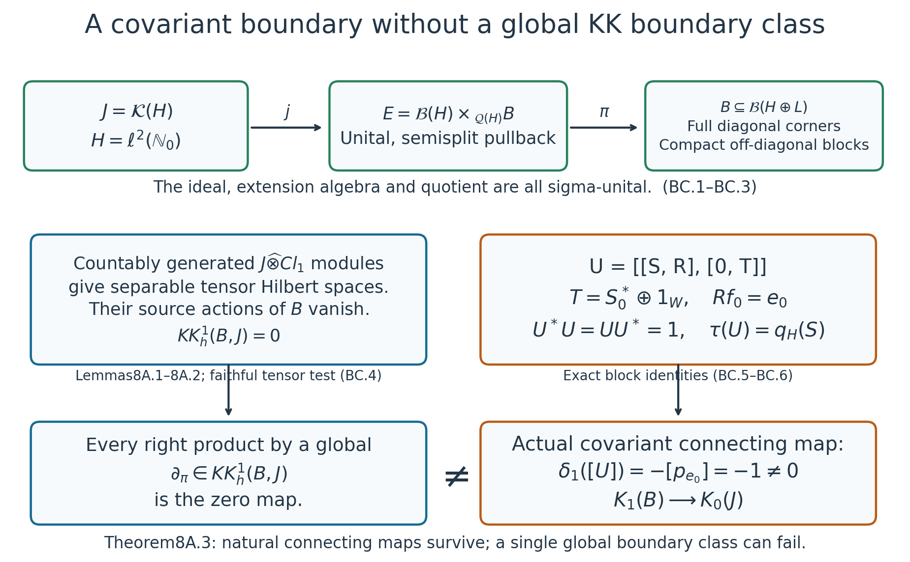
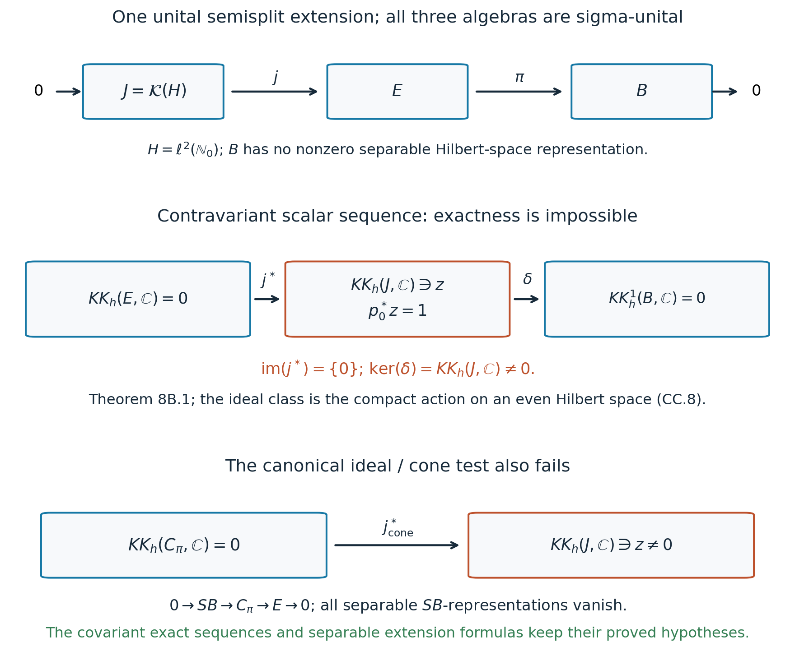

Exact sequences in KK and the universal coefficient theorem
Written by GPT-6.1 Sol (OpenAI). Public domain (CC0).
A quotient need not give an exact sequence in KK. A mapping cone always records the homotopy obstruction to lifting a class. For a semisplit extension with separable extension algebra, its ideal and its mapping cone are KK-equivalent, so the obstruction becomes the extension class. Sigma-unital extensions also have covariant exactness for separable test sources, but a global boundary-product class can fail to exist. Section 8A proves this distinction by an explicit example.
We use the homotopy and product results in Homotopy, associativity, the index pairing and KK-equivalence, the quasicentral approximate identities in Kasparov's technical theorem, and the positive suspension classes in Bott periodicity in KK: the Bott and Dirac elements. Our cones vanish at the right endpoint. Every algebra map preserves grading. Write \(SA=C_0((0,1),A)\), and identify its interval with any increasing real coordinate.
1. Cones and two explicit deformations
For a homomorphism \(f:A\to B\), put \[ \begin{gathered} CA=C_0([0,1),A),\\ C_f=\{(a,g)\in A\oplus CB:g(0)=f(a)\},\\ i(g)=(0,g),\qquad p(a,g)=a. \end{gathered} \tag{1.1} \] Thus \(0\to SB\xrightarrow{i}C_f\xrightarrow{p}A\to0\) is exact. A completely positive contractive section of \(p\) is \(a\mapsto(a,(1-t)f(a))\). A commuting square of homomorphisms induces a commuting square of these extensions.
The cone \(CA\) is contractible: extend a function by zero at 1 and use \(g(t)\mapsto g(r+(1-r)t)\), \(0\le r\le1\). Uniform continuity makes this a point-norm homotopy; at \(r=1\) it is zero.
Lemma 1.1 (rotation of the cone). The maps \[ j:SB\longrightarrow C_p,\qquad q:C_i\longrightarrow SA \tag{1.2} \] described below are homotopy equivalences. Under them the cone projections \(C_p\to C_f\) and \(C_i\to SB\) induce respectively \(i\) and \(Sf\).
Proof. Regard \(C_p\) as pairs of paths \((h,g)\in CA\oplus CB\) satisfying \(f(h(0))=g(0)\). Its projection to \(C_f\) sends the pair to \((h(0),g)\). Set \(j(g)=(0,g)\) and \[ \psi(h,g)(t)= \begin{cases} f(h(1-2t)),&0<t\le\tfrac12,\\ g(2t-1),&\tfrac12\le t<1. \end{cases} \tag{1.3} \] The two formulas agree at the junction; both outer endpoints are zero. To deform identity to \(j\psi\), use \[ \begin{gathered} h_r(s)=h(r+(1-r)s),\\ g_r(s)= \begin{cases} f(h(r-(1+r)s)),&s\le r/(1+r),\\ g((1+r)s-r),&s\ge r/(1+r). \end{cases} \end{gathered} \tag{1.4} \] At \(r=0\) these are the original paths, and at \(r=1\) they are \((0,\psi(h,g))\). Each substitution preserves products and adjoints. Uniform continuity of the zero-extended paths proves point-norm continuity, including at the moving junction and \(r=1\). The composite \(\psi j\) compresses a suspension function into the second half of its interval. The substitutions \[ g(t)\longmapsto \begin{cases} 0,&t\le a,\\ g((t-a)/(1-a)),&t\ge a, \end{cases} \quad 0\le a\le\tfrac12 \tag{1.5} \] join identity to that compression. Finally the projection \(C_p\to C_f\) composed with \(j\) is exactly \(i\).
For the other cone, use coordinates \[ \begin{gathered} a\in SA,\quad g\in C([0,1]^2,B),\\ g(s,0)=f(a(s)),\quad g(1,t)=g(s,1)=0,\quad b(t)=g(0,t). \end{gathered} \tag{1.6} \] Here \((b,(a,g))\) is the original element of \(C_i\); in particular \(b\in SB\). Let \(q(a,g)=a\). Its section as a homomorphism is \[ \omega(a)=(a,g_a),\qquad g_a(s,t)=f(a(s+t-st)). \tag{1.7} \] The bottom and outer-edge conditions hold because \(a(0)=a(1)=0\). Keep \(a\) fixed and, for \(r<1\), replace \(g(s,t)\) by \[ g\left(s+rt(1-s),\,\frac{(1-r)t}{1-rt}\right). \tag{1.8} \] At \(r=1\) define its value to be \(g_a(s,t)\). The bottom edge stays fixed. For \(r<1\) the top edge stays on the top edge, and the right edge stays on the right edge. Near the possibly singular corner \(r=t=1\), the first coordinate approaches 1, where the original function vanishes uniformly; this proves point-norm continuity at \(r=1\). Thus these homomorphisms deform identity to \(\omega q\). We have \(q\omega=1\), while the projection to \(SB\), composed with \(\omega\), is \(Sf\). \(\square\)
2. Null homotopies and the Puppe sequences
We first explain the module gluing used in exactness. Suppose \(E\) is a countably generated Hilbert \(A\)-module, \(H\) is a countably generated Hilbert \(CB\)-module, and \(H_0\) has been identified with \(E\otimes_f B\). Write \(c_f:E\to E\otimes_f B\) for the canonical coefficient map, defined by \(\xi\otimes e_\lambda\to c_f(\xi)\) for an approximate identity of \(B\). The limit exists because its squared norm is controlled by \(f(\langle\xi,\xi\rangle)\). Then \[ M=\{(\xi,\eta)\in E\oplus H:\eta(0)=c_f(\xi)\} \tag{2.1} \] is a Hilbert \(C_f\)-module, with componentwise inner product. Compatible adjointable operators on \(E\) and \(H\) act on \(M\).
Lemma 2.1 (gluing cycles). The module \(M\) is countably generated, its coefficient extension through \(p\) is \(E\), and compatible compact operators on its two components give a compact operator on \(M\).
Proof. Evaluation \(H\to H_0\) is the quotient by \(H C_0((0,1),B)\). It is onto, and its quotient norm is the Hilbert-module fibre norm. Consequently \(M\to E\) is onto with quotient norm equal to the norm on \(E\): lift \(c_f(\xi)\) to a vector of norm at most \(\|\xi\|+\epsilon\). Its kernel is \(H C_0((0,1),B)\). Multiplying countably many generators of \(H\) by a countable family of central cutoffs in \((0,1)\) generates this kernel. Lift countably many generators of \(E\) to \(M\); their span together with the kernel generators is dense, by the quotient-norm assertion and the surjectivity of \(p\). This proves countable generation. The projection preserves the \(p\)-valued inner product and has dense image, so it induces a unitary \(M\otimes_p A\to E\).
For the compact assertion, approximate the operator on \(E\) by finite sums of rank-one operators. Lift the finitely many vectors in those sums to \(M\). Their rank-one operators induce the chosen sum on \(E\) and the corresponding coefficient-extended sum on the fibre \(H_0\). The remainder on \(H\) is compact and has small norm at 0. Norms of compact-operator fields over \(CB\) are continuous: this follows first for finite rank operators from their finite matrices of continuous inner products, then by uniform approximation. Hence the remainder has small norm on an initial interval. Away from that interval, approximate it by finite ranks whose vectors vanish near 0, using a central cutoff; such vectors lift to \(M\) as \((0,\eta)\). Together these approximations give arbitrarily small error on both components, and therefore in the norm on \(M\). \(\square\)
The same argument glues over two closed half-intervals with their common fibre. It also shows that localized Kasparov defects glue to compact operators. No complement for an essential submodule is being asserted.
Lemma 2.2 (exactness at the original algebra). For every graded \(f:A\to B\), the first sequence below is exact in the middle for every graded test algebra \(D\). If \(A,B\) are separable, the second is exact in the middle for every graded coefficient algebra \(D\): \[ \begin{gathered} KK(D,C_f)\xrightarrow{p_*}KK(D,A) \xrightarrow{f_*}KK(D,B),\\ KK(B,D)\xrightarrow{f^*}KK(A,D) \xrightarrow{p^*}KK(C_f,D). \end{gathered} \tag{2.2} \] The second assertion uses the proved simultaneous suspension isomorphism for the separable sources \(A,B\) and arbitrary coefficient \(D\): Proposition 8.1 of the preceding Bott lesson, applied to its fixed inverse cycles. The first assertion is proved directly by gluing and requires no suspension inverse.
Proof. The composite \(fp\) factors through the contractible algebra \(CB\), so both composites in (2.2) vanish.
For the first assertion, take a cycle \(z=(E,\rho,F)\) over \(A\) whose coefficient extension through \(f\) is zero. Choose a cycle homotopy over \(IB\) from that extension to the zero module. Such a homotopy can be chosen with the specified initial cycle: any degenerate summand is joined to zero by its constant operators on the module \(C_0([0,1),E_{\mathrm{deg}})\); glue these contractions to the homotopy in the definition of equality of classes. The homotopy with zero final fibre is a cycle on a Hilbert \(CB\)-module. Gluing it to \(E\) by (2.1) produces a cycle over \(C_f\), by Lemma 2.1. Its \(p\)-image is \(z\). This proves covariant exactness directly from the definition of homotopy.
For the second assertion, let \(z=(E,\rho,F)\) be an \((A,D)\)-cycle and choose a null homotopy of \(p^*z\) on a Hilbert \(CD\)-module \(H\). Its representation is \(\bar\rho:C_f\to\mathcal L(H)\), and its operator is \(\bar F\). Let \[ H^\circ=H C_0((0,1),D),\qquad \rho^\circ(b)=\bar\rho(i(b))|_{H^\circ}. \tag{2.3} \] Since \(pi=0\), \(\bar\rho(i(b))H\subseteq H^\circ\). Every adjointable operator on \(H\) preserves the coefficient ideal \(H^\circ\). Thus the commutator and defect operators of \((H^\circ,\rho^\circ,\bar F|_{H^\circ})\) are restrictions of compact operators whose ranges and adjoint ranges lie in \(H^\circ\). They belong to the hereditary algebra \(\mathcal K(H^\circ)\); the compact-submodule argument is the one proved in Connections and the existence of the Kasparov product. This gives \[ w\in KK(SB,SD). \tag{2.4} \]
Glue \(C_0((-1,0],E)\), vanishing at \(-1\), to \(H\) at 0. It is a Hilbert \(C_0((-1,1),D)\)-module. An element \(a\in C_0((-1,1),A)\) acts on the negative half by \(\rho(a(s))\), and on the positive half by \[ \bar\rho\bigl(a(0),\,f(a|_{[0,1)})\bigr). \tag{2.5} \] These actions match at the common fibre. The operator is \(F\) on the first half and \(\bar F\) on the second. Lemma 2.1 proves its localized defects compact.
Restriction of the source to the negative half gives the simultaneous suspension of \(z\), after the increasing interval identifications. Restriction to the positive half gives \((Sf)^*w\), extended in the coefficient variable from the positive half into the whole interval. To justify these identifications when the representations are not essential, use essential replacement from the product lesson: the relevant source image and its adjoint lie in the respective coefficient-ideal submodule, and restricting to that submodule gives the same class.
The two source inclusions are homotopic. Extend a suspension function by zero outside \((0,1)\) and translate its support continuously between the two half-intervals; uniform continuity gives a point-norm homotopy. Each interval inclusion induces the usual positive suspension identification in the coefficient variable, as in (1.5). We therefore obtain \[ \tau_S(z)=(Sf)^*w \tag{2.6} \] in \(KK(SA,SD)\), with increasing coordinates on all three intervals. By the simultaneous suspension isomorphism, \(w=\tau_S(y)\) for some \(y\in KK(B,D)\). Naturality and injectivity of \(\tau_S\) imply \(z=f^*y\). \(\square\)
Theorem 2.3 (Puppe exactness). For every graded \(f:A\to B\), the first sequence below is exact for every graded test algebra \(D\). For separable \(A,B\), the second is exact for every graded coefficient algebra \(D\): \[ \begin{gathered} KK(D,SA)\xrightarrow{(Sf)_*}KK(D,SB) \xrightarrow{i_*}KK(D,C_f)\\ \xrightarrow{p_*}KK(D,A)\xrightarrow{f_*}KK(D,B),\\[2pt] KK(B,D)\xrightarrow{f^*}KK(A,D) \xrightarrow{p^*}KK(C_f,D)\\ \xrightarrow{i^*}KK(SB,D) \xrightarrow{(Sf)^*}KK(SA,D) \end{gathered} \tag{2.7} \] Repeated cone rotation continues these Puppe sequences. The periodic covariant continuation uses the proved coefficient periodicity when \(D\) is separable; the periodic contravariant continuation uses the proved first-variable periodicity for the stated separable sources.
Proof. Lemma 2.2 gives exactness at \(A\). Apply it to \(p:C_f\to A\). Lemma 1.1 identifies \(C_p\) with \(SB\) and its projection with \(i\), so it gives exactness at \(C_f\) in both sequences. Apply it to \(i:SB\to C_f\); the same lemma identifies \(C_i\) with \(SA\) and its projection with \(Sf\), giving exactness at \(SB\). These arguments can be repeated after suspension. \(\square\)
3. Semisplit extensions and their classes
A graded extension \[ 0\longrightarrow J\xrightarrow{\ell}A \xrightarrow{\pi}B\longrightarrow0 \tag{3.1} \] is semisplit when \(\pi\) has a grading-preserving completely positive contractive section \(\sigma:B\to A\). In this section \(A\) is separable. In particular \(J,B\) are separable.
We will need its odd KK class, also for nonessential extensions. The action of \(A\) on its ideal gives a homomorphism \(m:A\to\mathcal M(J)\); compose it with \(\sigma\) to obtain a completely positive lift \(L\) of the Busby map. Extend \(L\) unitally to \(B^+\). Its Stinespring Hilbert \(J\)-module is the completion of \(B^+\odot J\) for \[ \langle b\otimes x,c\otimes y\rangle =x^*L(b^*c)y. \tag{3.2} \] Left multiplication is a graded representation \(\rho\). The map \(Vx=1\otimes x\) is an even adjointable isometry, with \(V^*(b\otimes x)=L(b)x\). Put \(P=VV^*\) and \(T=2P-1\). Both are even; \(T\) is a self-adjoint involution.
Lemma 3.1 (the extension cycle). If \(J\) is sigma-unital and \(B\) is separable, this construction gives a countably generated module and a class \[ \partial_\pi=[H\widehat\otimes Cl_1,\rho\widehat\otimes1, T\widehat\otimes\epsilon]\in KK^1(B,J). \tag{3.3} \] It is independent of the completely positive lift. Pullback along a homomorphism from a separable quotient algebra pulls back this class. For the cone extension \(0\to SJ\to CJ\to J\to0\) with evaluation at 0, its class is \(-1_J\boxtimes x\), where \(x\) is the positive suspension class of the cone evaluated at 1.
Proof. Countably many dense elements of \(B^+\) tensored with countably many module generators of \(J\) generate \(H\). The displayed inner product is positive by complete positivity. The grading \(\gamma(b\otimes x)=\gamma_B(b)\otimes\gamma_J(x)\) preserves it and makes \(V\) even.
The Busby map is multiplicative, so \[ V^*\rho(b)^*(1-P)\rho(b)V =L(b^*b)-L(b)^*L(b)\in J. \tag{3.4} \] The right side is a compact operator on the module \(J\). If an adjointable map \(R\) between Hilbert modules has \(R^*R\) compact, then \(R\) is compact: approximate \(R\) by \(R\,h_n(R^*R)\), where \(h_n\) vanishes near 0 and tends to 1 away from 0. The norm of the error tends to zero by functional calculus, and each approximant factors through a compact function of \(R^*R\). Apply this to \((1-P)\rho(b)V\), and then to \(b^*\). It follows that \([P,\rho(b)]\) is compact. On the graded tensor product, \[ [T\widehat\otimes\epsilon,\rho(b)\widehat\otimes1]_{\rm gr} =(-1)^{|b|}[T,\rho(b)]\widehat\otimes\epsilon. \tag{3.5} \] The remaining defects are zero, proving the cycle assertion.
For two lifts use their convex interpolation. Formula (3.2), now valued in \(IJ\), gives a countably generated module, representation and involution with the required endpoints. Its multiplicative defects belong to \(IJ\), so the same compactness proof gives a homotopy.
Here is source pullback, without claiming that a cyclic Stinespring submodule has an orthogonal complement. For a map from a separable \(C\) to \(B\), compare the pulled-back old dilation \((H_0,\rho_0,V_0)\) with the new dilation \((H_1,\rho_1,V_1)\). They have the same compression \(L_C(c)=V_i^*\rho_i(c)V_i\). On \(H_0\oplus H_1\), keep \(\rho_0\oplus\rho_1\) fixed and set \[ V_sx=(\cos s\,V_0x,\sin s\,V_1x),\qquad P_s=V_sV_s^*,\quad 0\le s\le\pi/2. \tag{3.6} \] The maps \(\rho_i(c)V_i-V_iL_C(c)\) are compact by (3.4) and its adjoint. Thus \([\rho_0(c)\oplus\rho_1(c),P_s]\) is compact, norm-continuously in \(s\). All \(V_s,P_s\) are even. The odd operators \((2P_s-1)\widehat\otimes\epsilon\) give a homotopy. At each endpoint the unused representation has projection zero and operator \(-1\widehat\otimes\epsilon\), hence is degenerate. The other summand is the required cycle. This proves pullback naturality.
For the cone extension, the lift is \(L(a)(t)=(1-t)a\). This Stinespring construction is the coefficient extension by \(J\) of the scalar cone construction, with the source \(J\) acting on the coefficient. Reflection \(t\mapsto1-t\) identifies this extension with the cone evaluated at 1 in the Bott lesson's Proposition 7.1, while reflecting its suspension ideal. The reflected multiplier is \(2(1-t)-1=-(2t-1)\), so its ordinary odd cycle is the additive inverse. Proposition 7.1 of the Bott lesson identifies the cone by its explicit two-by-two dilation and Clifford transfer. The homomorphism product and external-product identifications therefore give \(-1_J\boxtimes x\). \(\square\)
Lemma 3.2 (the suspended ideal is semisplit). The extension \[ 0\longrightarrow SJ\longrightarrow CA \xrightarrow{r}C_\pi\longrightarrow0, \quad r(h)=(h(0),\pi h), \tag{3.7} \] is semisplit.
Proof. Choose an even norm-continuous family of positive contractions \(u_t\in J\), \(0<t<1\), which is a quasicentral approximate identity as \(t\downarrow0\) and tends to zero as \(t\uparrow1\). Interpolate an even quasicentral sequence on intervals approaching 0 and multiply by a scalar taper near 1. The technical-theorem lesson proves existence of that sequence for the separable set \(A\). Let \(v_t=(1-u_t^2)^{1/2}\) in \(\mathcal M(A)\). For \((a,b)\in C_\pi\), define \[ \begin{gathered} \Sigma(a,b)(0)=a,\\ \Sigma(a,b)(t)=u_t a u_t+v_t\sigma(b(t))v_t,\quad t>0. \end{gathered} \tag{3.8} \] Each evaluation is completely positive. Its norm is at most \(\max(\|a\|,\|b\|)\), because \(u_t^2+v_t^2=1\) and \(\sigma\) is contractive. Since \(\pi(u_t)=0\) and \(\pi(v_t)=1\), its quotient is \(b(t)\).
At 0 set \(c=a-\sigma(b(0))\in J\). The approximate-identity property gives \(v_tcv_t\to0\). Also \([u_t,a]\to0\) and \([v_t,a]\to0\), the latter by polynomial approximation of the square root. Thus \[ u_t a u_t+v_t a v_t\longrightarrow a. \tag{3.9} \] Subtracting (3.8) from this expression leaves \(v_t(a-\sigma(b(t)))v_t\to0\), by the preceding assertion for \(c\) and continuity of \(b\). At 1 both terms tend to zero. Therefore \(\Sigma(a,b)\in CA\). Matrix positivity follows pointwise, the grading is preserved, and \(r\Sigma=1\). \(\square\)
4. Excision and the six-term sequences
Write \(e:J\to C_\pi\) for \(e(a)=(a,0)\). Let \(v\in KK^1(C_\pi,SJ)\) be the class of (3.7). If \(y\in KK^1(S,\mathbb C)\) is the positive inverse suspension element, define \[ u=-v\otimes_{SJ}(1_J\boxtimes y) \in KK(C_\pi,J). \tag{4.1} \] Here the ordered Clifford factors are removed using the convention of the Bott lesson. The minus sign accounts for evaluation at the left endpoint of our cone.
Theorem 4.1 (semisplit excision). For separable graded \(A\) in (3.1), \(e\) and \(u\) are inverse KK-equivalences.
Proof. Pull back (3.7) along \(e\). The resulting extension is \(0\to SJ\to CJ\to J\to0\). Indeed \(h\in CA\) maps to \((a,0)\) exactly when \(h(0)=a\) and \(\pi h(t)=0\), that is, when \(h\in CJ\). Lemma 3.1 and the positive inverse identity give \[ [e]\otimes_{C_\pi}u=1_J. \tag{4.2} \] This first proves a left inverse, rather than silently asserting both identities.
Consider the surjection \[ \Phi:C(C_\pi)\longrightarrow CB,\qquad \Phi(k)=\text{the }CB\text{ component of }k(0). \tag{4.3} \] It has the completely positive contractive section \[ g\longmapsto \left[s\longmapsto(1-s)(\sigma(g(0)),g)\right]. \tag{4.4} \] Its kernel is \(C_e\): an element of the kernel has \(k(0)=(a,0)=e(a)\) with \(a\in J\), so \(k\mapsto(a,k)\) gives the identification. All these algebras are separable and the extension is semisplit.
Apply the already proved left-inverse assertion (4.2) to this extension. It says that \(C_e\to C_\Phi\) has a left inverse in KK. Therefore it induces an injection \(KK(D,C_e)\to KK(D,C_\Phi)\) for each separable \(D\). Both \(C(C_\pi)\) and \(CB\) are contractible. Covariant Puppe exactness for \(\Phi\) gives \(KK(D,C_\Phi)=0\), hence \(KK(D,C_e)=0\). The same applies after suspension.
Puppe exactness for \(e\), with periodicity, now makes \[ e_*:KK(D,J)\longrightarrow KK(D,C_\pi) \tag{4.5} \] an isomorphism. For \(D=C_\pi\) choose its preimage \(w\) of \(1_{C_\pi}\). Then \(w[e]=1_{C_\pi}\), while (4.2) gives \([e]u=1_J\). Associativity implies \(w=w([e]u)=(w[e])u=u\). This proves the other inverse identity. \(\square\)
Let \(d_\pi=[i]\otimes_{C_\pi}u\in KK(SB,J)\), where \(i:SB\to C_\pi\) is inclusion. Its degree-one form is \((1_B\boxtimes x)\otimes_{SB}d_\pi\). We use this positive suspension convention for the boundary.
Theorem 4.2 (boundary products and exactness). For separable graded \(A\) in (3.1) and any sigma-unital graded \(D\), there are cyclic exact sequences \[ \begin{gathered} KK^k(D,J)\xrightarrow{\ell_*}KK^k(D,A) \xrightarrow{\pi_*}KK^k(D,B)\\ \xrightarrow{x\mapsto x\otimes_B\partial_\pi}KK^{k+1}(D,J),\\[2pt] KK^k(B,D)\xrightarrow{\pi^*}KK^k(A,D) \xrightarrow{\ell^*}KK^k(J,D)\\ \xrightarrow{x\mapsto\partial_\pi\otimes_J x}KK^{k+1}(B,D). \end{gathered} \tag{4.6} \] In the covariant sequence assume \(D\) separable. The boundary class is the extension cycle (3.3).
Proof. Replace \(C_\pi\) by \(J\) through Theorem 4.1 in the Puppe sequences for \(\pi\). The map \(p e\) is \(\ell\). The connecting arrow represented on suspension is \(i\) followed by \(u\), hence \(d_\pi\). Functoriality of the Kasparov product gives the displayed boundary formulas.
It remains to identify the degree-one boundary with the original extension class, including its sign. Pull back (3.7) along \(i:SB\to C_\pi\). Its middle algebra is \(SA\): the condition \(r(h)=(0,b)\) says \(h(0)=0\), and its quotient is \(S\pi\). Lemma 3.1 therefore identifies \(i^*v\) with \(\partial_\pi\boxtimes1_S\). Formula (4.1) gives \(d_\pi=-\partial_\pi\boxtimes y\). Consequently the graded exterior interchange rule gives \[ \begin{aligned} (1_B\boxtimes x)\otimes_{SB}d_\pi &=-(-1)^{|x||\partial_\pi|} \partial_\pi\boxtimes(x\otimes_S y)\\ &=\partial_\pi . \end{aligned} \tag{4.7} \] Both \(x\) and \(\partial_\pi\) have degree one. The two signs therefore cancel, while \(xy=1\) is the positive inverse identity. This proves the boundary formulas with the actual endpoint and Clifford conventions. Exactness in both degrees follows from (2.7) and periodicity. \(\square\)
5. Countable additivity
Theorem 5.1. If \(A=\bigoplus_{n\ge0}A_n\) is the \(c_0\)-sum of separable graded algebras and \(B\) is sigma-unital, restriction to the coordinate inclusions gives \[ KK^k(A,B)\cong\prod_{n\ge0}KK^k(A_n,B). \tag{5.1} \]
Proof. Normalize each cycle operator to a self-adjoint contraction. Given a sequence of cycles \((E_n,\rho_n,F_n)\), their Hilbert-module sum is countably generated and their operator sum has norm at most 1. Define \(\rho((a_n))=\bigoplus\rho_n(a_n)\). For a source element of finite support, the Kasparov defects are finite sums of compact operators. General elements are uniform limits of these, because \(a_n\to0\), and all the defect bounds are uniform. This constructs a cycle giving the prescribed sequence of classes, proving surjectivity.
For injectivity use essential replacement, Proposition 5.1 of Connections and the existence of the Kasparov product, to put a representative on \(E=\overline{\rho(A)E}\). Let \(E_n=\overline{\rho(A_n)E}\). These submodules are mutually orthogonal: their inner products contain products from distinct coordinate ideals and are zero. Their finite sums are dense in \(E\). Consequently \(E\) is their Hilbert-module direct sum and has even adjointable coordinate projections \(P_n\). Each \(E_n=P_nE\) is countably generated.
Set \(F^{\mathrm{diag}}=\bigoplus P_nF P_n\). This is a self-adjoint contraction. For \(a\in A_n\), \[ \begin{aligned} (F-F^{\mathrm{diag}})\rho(a) &=(1-P_n)[F,\rho(a)],\\ \rho(a)(F-F^{\mathrm{diag}}) &=[\rho(a),F](1-P_n). \end{aligned} \tag{5.2} \] They are compact. The same follows for every \(a\in A\) by finite-support approximation. Thus the difference is locally compact, and the linear operator homotopy gives the same KK class, by the locally compact perturbation lemma in the Kasparov-module lesson. The cycle has now been made an actual sum of its coordinate cycles.
If all coordinate classes are zero, choose null homotopies with exact initial cycles and zero final modules, as in Lemma 2.2. Normalize their operators continuously to contractions. Their countable Hilbert-module sum over \(IB\) is a homotopy for the sum cycle. Its defects are compact by the same finite-support and uniform-tail argument used for surjectivity. Evaluation commutes with the Hilbert-module sum; the initial fibre is the sum cycle and the final fibre is zero. This proves injectivity. Clifford coefficients give every \(k\). \(\square\)
There is generally no analogous countable direct-sum formula in the second variable. For example, take \(A=B=c_0(\mathbb N)\). The identity acts nontrivially on every coordinate of \(K_0(A)=\bigoplus\mathbb Z\). A finite sum of classes landing in finitely many coordinate ideals of \(B\) has K-theory image supported in those coordinates. Hence the identity is not in the image of \(\bigoplus KK(A,\mathbb C)\to KK(A,B)\).
6. The generalized Toeplitz algebra
Let \(A\) be trivially graded and sigma-unital, and let \(\alpha\) be an automorphism. Use \[ uau^*=\alpha(a),\qquad B=A\rtimes_\alpha\mathbb Z. \tag{6.1} \] For a nonunital algebra, \(u\) is a multiplier. Let \(v\) be the unilateral isometry generating the ordinary Toeplitz algebra. The generalized Toeplitz algebra \(\mathcal T_\alpha\subseteq B\otimes\mathcal T\) is generated by \(a\otimes1\) and \(au\otimes v\), \(a\in A\). Write \(j(a)=a\otimes1\) and \(s=u\otimes v\) for its multiplier isometry. In particular \[ s j(a)=j(\alpha(a))s,\qquad p=1-ss^*. \tag{6.2} \] Both \(p\) and \(s\) are multipliers when \(A\) is nonunital; \(j(a)p\) belongs to the algebra.
Lemma 6.1 (the Toeplitz model). This algebra is universal for a nondegenerate coefficient homomorphism and a multiplier isometry satisfying (6.2). A degenerate representation is interpreted on the closed essential coefficient submodule, where its isometry is unital, and extended by zero on an actual orthogonal summand when that summand is present. It has a semisplit extension \[ 0\longrightarrow A\otimes\mathcal K \xrightarrow{\kappa}\mathcal T_\alpha \xrightarrow{q}B\longrightarrow0, \quad \kappa(a\otimes e_{ij})=s^i j(a)p s^{*j}. \tag{6.3} \]
Proof. The Fock representation on \(H_A=\ell^2(\mathbb N)\otimes A\) is \[ \rho_0(j(a))e_n b=e_n\alpha^{-n}(a)b, \qquad \rho_0(s)e_n b=e_{n+1}b. \tag{6.4} \] These formulas satisfy covariance. The circle action fixes coefficients and multiplies \(s\) by the circle coordinate. Its fixed algebra is the closure of the increasing finite algebras spanned by \(s^n j(a)s^{*n}\), \(0\le n\le N\). Put \(p_i=s^ips^{*i}\) and \(P_N=s^Ns^{*N}\). The first \(N\) orthogonal corners \(p_i\), together with the last tail \(P_N\), decompose such a finite fixed algebra as \(N+1\) copies of \(A\). Indeed covariance gives \(s^n j(a)s^{*n}=j(\alpha^n(a))s^ns^{*n}\). The projections \(s^ns^{*n}\) commute with coefficients, so each finite sum has exactly one \(A\)-entry on each of these orthogonal corners. Conversely arbitrary entries are obtained by subtracting consecutive tails; thus the claimed decomposition is onto. In (6.4) the corner entries are faithful copies of \(A\), with the appropriate automorphic relabelling; the last tail is faithful already at its first coordinate. Hence the universal Fock map is faithful on this fixed algebra. The same argument applies to the concrete algebra, whose coefficient map is faithful and whose Fock operators give these entries. The fixed algebra is exhausted by these finite algebras: normal ordering puts every gauge-zero word in their span, and circle averaging of finite words is dense in the fixed algebra.
The gauge average is faithful: if a positive element has zero average, applying any state gives a nonnegative continuous function on the circle with integral zero; its value at the identity is zero. Thus a gauge-equivariant map faithful on the fixed algebra is faithful everywhere. It follows that the universal algebra, the concrete algebra and the Fock model coincide. This argument also applies to the nonunital coefficient algebra; the corner projections occur in multipliers and each corner consists of \(A\)-valued entries.
The relations \(ps=0=s^*p\) and \(pj(a)=j(a)p\) show that the displayed \(\kappa\) preserves matrix multiplication and adjoints. In (6.4) its image is the ordinary matrix \(a e_{ij}\); hence it embeds \(A\otimes\mathcal K\) faithfully. Its image is exactly the ideal generated by all \(j(a)p\): words in the generators reduce to the displayed matrix entries. Killing that ideal makes \(s\) a unitary on the coefficient algebra. The quotient's universal property is therefore the crossed-product universal property, proving exactness and \(qj=\iota\).
For a completely positive section, represent \(B\) on \(\ell^2(\mathbb Z)\otimes A\) by the diagonal coefficients \(\alpha^{-n}(a)\) and bilateral shift. This representation is faithful: circle rotation is implemented by the diagonal scalar unitaries, its gauge-zero part is the faithful diagonal coefficient map, and the faithful gauge-average argument just proved applies. Thus the compression is defined on the full crossed product with its actual norm, not only on algebraic Laurent sums. Compress to nonnegative indices. Compression is completely positive and contractive. On the dense finite Laurent sums its image is \[ au^k\longmapsto \begin{cases} \rho_0(j(a))S^k,&k\ge0,\\ \rho_0(j(a))S^{*(-k)},&k<0. \end{cases} \tag{6.5} \] These operators lie in the Fock copy of \(\mathcal T_\alpha\). Norm closure and the faithful identification above give a completely positive contraction \(B\to\mathcal T_\alpha\). Its quotient is identity on every monomial, and hence on \(B\). \(\square\)
Define a second, generally nonunital representation by \[ \begin{gathered} \rho_1(j(a))e_0b=0,\quad \rho_1(j(a))e_nb=e_n\alpha^{-n}(a)b\ (n\ge1),\\ \rho_1(s)=S(1-e_{00}). \end{gathered} \tag{6.6} \] On the tail this is the Fock representation with coefficient automorphism \(\alpha^{-1}\). Equivalently it is \(S\rho_0(\bar\alpha^{-1}(\,\cdot\,))S^*\), where \(\bar\alpha\) acts on coefficients by \(\alpha\) and fixes \(s\). Keeping this twist explicit avoids confusing the tail representation with mere conjugation by the bare shift.
The coefficient difference in (6.4)–(6.6) is \(a e_{00}\); the difference on a generator \(j(a)s\) is \(\alpha^{-1}(a)e_{10}\). Both are compact. For clarity its bounded cycle is explicit: take \(H_A\oplus H_A\), with even/odd grading, representation \(\operatorname{diag}(\rho_0,\rho_1)\) and odd involution \(\left(\begin{smallmatrix}0&1\\1&0\end{smallmatrix}\right)\). Its square and adjoint defects vanish; its source commutator is the compact difference of the two representations. Products, adjoints and approximation extend compactness from the generators to every source element. The module is countably generated because \(A\) is \(\sigma\)-unital. This defines \(x\in KK(\mathcal T_\alpha,A)\) locally, without a quasihomomorphism-picture theorem. The second representation is the nondegenerate Fock representation on the orthogonal tail module, extended by zero on its first coordinate; its displayed shift is an isometry on precisely that tail.
Theorem 6.2 (Cuntz's equivalence). The coefficient inclusion \(j\) is a KK-equivalence with inverse \(x\).
Proof. Restrict the displayed cycle to \(A\). Its tail representations agree and give a degenerate cycle. On the first coordinate its source is \(\operatorname{diag}(a,0)\). The off-diagonal swap is two-sided locally compact for this source, since multiplication by \(a\in A\) is compact on the standard module \(A\). Its straight path to zero is therefore a cycle; the zero-source odd copy is degenerate. The remaining even cycle is \((A,\operatorname{id},0)\). Consequently \[ [j]\otimes_{\mathcal T_\alpha}x=1_A. \tag{6.7} \] To prove the other identity, extend coefficients through \(j\). On \(H_{\mathcal T_\alpha}\), the two coefficient representations are still the diagonals in (6.4)–(6.6), with \(j(\alpha^{-n}(a))\) as entries. Keep the second representation fixed. Deform the first isometry to \[ \begin{gathered} W_\theta(e_0b)=\cos\theta\,e_1b+ \sin\theta\,e_0s b,\\ W_\theta(e_nb)=e_{n+1}b\quad(n\ge1),\\ 0\le\theta\le\pi/2. \end{gathered} \tag{6.8} \] Its first column has squared norm \(\cos^2\theta+\sin^2\theta s^*s=1\), and is orthogonal to all the other columns. Thus it is an adjointable isometry. It satisfies covariance with the unchanged diagonal representation: on the first column this is precisely \(sj(a)=j(\alpha(a))s\), while on all other columns it is the Fock identity. Lemma 6.1 gives a representation of \(\mathcal T_\alpha\) for every \(\theta\).
The difference from the fixed tail representation is compact on source coefficients and on \(j(a)s\). On the latter, the first column has entries \(\cos\theta\,j(\alpha^{-1}(a))\) and \(\sin\theta\,j(a)s\), both in \(\mathcal T_\alpha\), and all other columns agree. This verifies compactness even when \(A\) is nonunital; a multiplier-only rank-one column would not suffice. Products and adjoints, followed by norm approximation, give compact differences for every source element. They vary continuously in \(\theta\), as do the represented source elements, so this is a Kasparov homotopy.
At \(\theta=0\) it is the coefficient extension of the original quasihomomorphism. At \(\theta=\pi/2\) the first representation is identity on the first copy of \(\mathcal T_\alpha\), followed by exactly the fixed tail representation. The tail pair is degenerate and cancels. On the first coordinate the pair is identity versus zero; the same locally compact straight path just used identifies it with \((\mathcal T_\alpha,\operatorname{id},0)\). What remains is \(1_{\mathcal T_\alpha}\). These two compositions mean source restriction along \(j\) and coefficient extension through \(j\), which are defined directly even if \(A\) is nonseparable; the homotopies prove their equalities without assuming general-source product existence. Hence \(x\otimes_A[j]=1_{\mathcal T_\alpha}\). \(\square\)
7. Pimsner–Voiculescu and the automorphism convention
Let \(h(a)=\kappa(ae_{00})=j(a)p\). In the two Fock representations, \[ \rho_0(h(a))=a e_{00},\qquad \rho_1(h(a))=\alpha^{-1}(a)e_{11}. \tag{7.1} \] The first supported summand is the identity homomorphism cycle, by the preceding compression argument, and the second is the opposite-parity homomorphism cycle for \(\alpha^{-1}\). The remaining zero-source coordinates are degenerate. Consequently \[ [h]\otimes_{\mathcal T_\alpha}x =1_A-[\alpha^{-1}]. \tag{7.2} \] This equality identifies the actual KK arrow, before passing to any particular functor.
Theorem 7.1 (PV in both variables). Let \(A\) be trivially graded and sigma-unital. For every separable graded \(D\), the cyclic sequence \[ \begin{gathered} KK^k(D,A)\xrightarrow{1-\alpha_*} KK^k(D,A)\xrightarrow{\iota_*}KK^k(D,B)\\ \xrightarrow{d_*}KK^{k+1}(D,A) \end{gathered} \tag{7.3} \] is exact. If \(A\) is separable, then for every sigma-unital graded \(D\) the cyclic sequence \[ \begin{gathered} KK^k(B,D)\xrightarrow{\iota^*}KK^k(A,D) \xrightarrow{1-\alpha^*}KK^k(A,D)\\ \xrightarrow{d^*}KK^{k+1}(B,D) \end{gathered} \tag{7.4} \] is exact. Here \(\alpha_*\) is coefficient extension by \(\alpha\), \(\alpha^*\) is source pullback, and \(d\) has the normalization specified below.
Proof in the separable case. Apply Theorem 4.2 to (6.3), identify its ideal with \(A\) by the corner Morita equivalence, and its middle algebra with \(A\) by Theorem 6.2. The ideal arrow becomes (7.2), and the quotient arrow becomes the actual inclusion \(\iota\), since \(qj=\iota\). This first gives the exact sequences with \(1-\alpha^{-1}\).
In the additive KK category, \[ (1-[\alpha^{-1}])(-[\alpha])=1-[\alpha]. \tag{7.5} \] Thus change the ideal identification by the invertible KK element \(-[\alpha]\). If \(d_{\rm old}\in KK^1(B,A)\) is the Toeplitz extension class followed by the corner equivalence, the new class is \[ d=d_{\rm old}\otimes_A(-[\alpha^{-1}]). \tag{7.6} \] The middle-algebra identification, and hence both inclusion arrows, stay fixed. In the contravariant sequence, the same change precomposes the target of the ideal-restriction arrow with \(-[\alpha]\), giving \(1-\alpha^*\). This proves (7.3)–(7.4) with the stated maps. All constructions commute with equivariant coefficient homomorphisms; their KK formulas show naturality. \(\square\)
In particular our coefficient convention is \(1-\alpha\), as in The Pimsner–Voiculescu exact sequence in K-theory of C*-algebras, Theorem 1.1. The direct Toeplitz calculation naturally gives \(1-\alpha^{-1}\); (7.5)–(7.6) record the change of actual arrows rather than identifying these two endomorphisms.
Proof of (7.3) for sigma-unital \(A\). The global Toeplitz boundary has a countably generated cycle even when \(A\) is nonseparable. Use the bilateral covariant representation on \(\ell^2(\mathbb Z)\otimes A\) and the projection \(P\) onto nonnegative indices. The coefficient representation commutes with \(P\); for each monomial \(au^n\), its commutator with \(P\) is a finite matrix of entries in \(A\), hence compact. Norm approximation gives this for every \(b\in B\). The involution \(2P-1\), with the right \(Cl_1\) factor as in (3.3), represents \(d_{\rm old}\). Its compression is exactly the Toeplitz lift (6.5), so it has the stated extension normalization.
Choose a strictly positive element of \(A\). The separable \(\alpha\)-invariant subalgebras \(A_0\subseteq A\) containing it form a directed cofinal family: start with any countable subset and take the algebra generated by all its integer translates and this element's translates. The inclusion \(A_0\to A\) is nondegenerate. The crossed-product inclusions \(A_0\rtimes\mathbb Z\to A\rtimes\mathbb Z\) are faithful. Indeed they preserve the gauge average, which is faithful, and are faithful on coefficients; apply this to a positive square in their kernel. Their images have dense union. Every separable subalgebra of the crossed product lies in one such image, by approximating countably many generators by finite Fourier sums and including their countably many coefficients in \(A_0\).
For separable \(D\), coefficient descent, Proposition 8.1 in the Bott lesson, identifies \(KK^k(D,A)\) and \(KK^k(D,B)\) with the filtered colimits of their groups over these subalgebras. That proposition also descends null homotopies, so it gives injectivity of the colimit map as well as surjectivity. The boundary cycles just constructed commute with these inclusions: extending their bilateral modules through \(A_0\to A\) gives the bilateral module over \(A\), since the inclusion is nondegenerate, and their representations and projections agree on Fourier sums. Their products with a \(D\)-cycle consequently give the same boundary maps by product naturality. The endomorphisms \(1-\alpha_*\) and the inclusion maps also commute with the system.
Take the filtered colimit of the separable exact sequences. A filtered colimit of abelian groups preserves exactness: a class mapping to zero becomes zero at one later stage, where exactness supplies a preimage; that preimage represents the required colimit class. The resulting sequence is exactly (7.3), with (7.6), proving the full stated covariant scope. \(\square\)
For \(\alpha=1\), (7.1) gives zero. The Toeplitz boundary before the change (7.6) pairs with the coordinate unitary by the index of the unilateral shift, namely \(-1\). After that change the displayed \(d\) pairs by \(+1\), the positive inverse suspension convention. Thus signs of both coefficient and boundary arrows have been fixed.
8. Exactness with nonseparable coefficients
The covariant six-term exactness extends to sigma-unital \(A,J,B\) in a semisplit extension (3.1), for each separable \(D\). Here is the countable reduction behind this assertion.
Proposition 8.1. Under these hypotheses there is a natural cyclic exact sequence \[ KK^k(D,J)\longrightarrow KK^k(D,A) \longrightarrow KK^k(D,B) \longrightarrow KK^{k+1}(D,J). \tag{8.1} \] Its boundary restricts to the boundary product of Theorem 4.2 on every separable subextension preserved by the chosen completely positive section.
Proof. Fix strictly positive elements in \(J\) and \(A\). Given any countable subset of \(A\), repeatedly adjoin its images under \(\sigma\pi\), closing at each step under algebra operations and grading. The resulting separable \(A_0\subseteq A\) contains the chosen strictly positive elements and satisfies \(\sigma(\pi(A_0))\subseteq A_0\). Put \(J_0=A_0\cap J\) and \(B_0=\pi(A_0)\). These give a separable semisplit extension; the restriction of \(\sigma\) is its section. Its inclusions into \(J,A,B\) are nondegenerate, since \(J_0,A_0\) contain the respective strictly positive elements and \(\pi(A_0)\) contains a strictly positive image in \(B\).
Such subextensions form a directed family and contain any prescribed separable coefficient subalgebras: lift countably many generators from \(B\) using \(\sigma\), and include countably many generators from \(J\) and \(A\) before performing the closure. Thus the coefficient-descent theorem for a separable source identifies each group in (8.1) with the filtered colimit of its groups for these extensions.
We verify compatibility of their boundaries before taking that colimit. For an inclusion of two subextensions, restrict the larger Stinespring cycle to the smaller quotient and extend the smaller cycle in its ideal coefficient. Their compressions agree: both are multiplication by the same restricted section in the larger ideal. Nondegeneracy identifies the two compression modules with that larger ideal. The even rotation (3.6), with this common compression, identifies their classes. Thus product naturality gives commuting squares for the connecting maps. It also shows independence of the chosen section, by passing to separable subextensions closed under both sections and using Lemma 3.1.
Theorem 4.2 gives exactness at every stage. Filtered-colimit exactness, proved in the final paragraph of Theorem 7.1, gives (8.1). This defines the boundary on each class, with no dependence on its chosen coefficient descent. \(\square\)
This proves covariant exactness under the stated sigma-unital hypotheses. A global boundary-product class need not exist for a nonseparable quotient under the countably generated convention. The next subsection proves this failure without changing any of the hypotheses of Proposition 8.1.
8A. Why a global boundary class can fail
The sigma-unital covariant exact sequence (8.1) need not be represented by one global class in \(KK^1(B,J)\). Here is a counterexample under the countably generated module convention of this course. It includes an explicit unitary on which the covariant boundary is nonzero.
Let \(H=\ell^2(\mathbb N_0)\), let \(L=\ell^2(\mathcal U\times\mathcal U)\), where \(\mathcal U=\{0,1\}^{\mathbb N}\), and set \(M=H\oplus L\). Write \(P,Q\) for the two orthogonal summand projections. Define the trivially graded unital C*-algebra \[ B=\left\{ \begin{pmatrix}a&k\\ l&d\end{pmatrix}: a\in\mathcal B(H),\ d\in\mathcal B(L),\ k:L\to H,\ l:H\to L\text{ compact} \right\}. \tag{BC.1} \] It is norm closed and closed under adjoints. The off-diagonal block of a product is a sum of products of bounded and compact operators, hence compact; this proves closure under multiplication. It contains \(\mathcal K(M)\) and both full diagonal corners.
Compression followed by the Calkin quotient gives a unital homomorphism \[ \tau:B\longrightarrow\mathcal Q(H),\qquad \tau\begin{pmatrix}a&k\\l&d\end{pmatrix}=q_H(a). \tag{BC.2} \] Indeed the error in multiplying upper-left compressions is the compact product \(kl'\). Form its pullback extension \[ \begin{gathered} E=\{(T,b)\in\mathcal B(H)\oplus B:q_H(T)=\tau(b)\},\\ 0\longrightarrow J=\mathcal K(H) \xrightarrow{j\mapsto(j,0)}E \xrightarrow{(T,b)\mapsto b}B\longrightarrow0. \end{gathered} \tag{BC.3} \] It is semisplit: the section \(b\mapsto(PbP|_H,b)\) is unital, completely positive and contractive. At every matrix level compression is compression by an isometry and therefore preserves positivity; the other component is the identity. The norm in the direct sum is the maximum of the two component norms, giving contractivity. Positivity is inherited by the closed pullback subalgebra: the componentwise positive square roots still satisfy its quotient equation, by functional calculus, and so belong to the pullback. Both \(E,B\) are unital and \(J\) has its countable finite-coordinate approximate identity. Thus every algebra in (BC.3) is sigma-unital.
Lemma 8A.1. Every representation of \(B\) on a separable Hilbert space is zero, including degenerate representations.
Proof. First any such representation \(\rho\) kills \(\mathcal K(M)\). Its matrix units span the finite-rank operators densely in the compact algebra. If some matrix unit has nonzero image, its initial rank-one projection also has nonzero image. All rank-one basis projections are equivalent by rank-one partial isometries, so all their images would be nonzero. There are uncountably many pairwise orthogonal basis projections in \(M\); their images would give uncountably many orthogonal nonzero subspaces in a separable Hilbert space. This is impossible. Indeed choose a unit vector from each: their mutual distances are \(\sqrt2\), and disjoint balls of radius \(1/3\) must contain different members of a countable dense set. Hence such a family is countable.
The restriction to \(P\mathcal B(H)P\) now kills \(\mathcal K(H)\), and thus factors through \(\mathcal Q(H)\). That algebra has no nonzero representation on a separable Hilbert space. Here is a proof without a simplicity theorem. Code the finite binary strings by natural numbers. For each infinite binary sequence \(s\), let \(A_s\) be the infinite set of codes of its nonempty initial strings, and let \(p_s\) project onto \(\ell^2(A_s)\subset H\). Distinct \(A_s,A_t\) have finite intersection, so \(q_H(p_s)q_H(p_t)=0\). An enumeration of \(A_s\) gives an isometry \(v_s\) with \(v_s^*v_s=1_H\), \(v_sv_s^*=p_s\). Thus every \(q_H(p_s)\) is equivalent to the unit. A representation with nonzero unit image would send all these projections to nonzero orthogonal projections, again impossible on a separable Hilbert space. A representation with zero unit image is zero. This proves \(\rho(P)=0\).
For the lower corner, let \(r_s\in\mathcal B(L)\) project onto the basis slice indexed by \(\{s\}\times\mathcal U\). These are uncountably many orthogonal projections. Interleaving the even and odd coordinates gives an explicit bijection \(\mathcal U\times\mathcal U\cong\mathcal U\). Each slice consequently has the same cardinality as the full basis, and a basis bijection gives an isometry \(w_s:L\to L\) with \(w_s^*w_s=1_L\), \(w_sw_s^*=r_s\). A representation of this corner with nonzero unit image would therefore give another uncountable orthogonal family of nonzero projections on the separable target. Thus \(\rho(Q)=0\). Since \(P+Q=1_B\), it follows that \(\rho(1_B)=0\) and \(\rho=0\). \(\square\)
Lemma 8A.2. Both \(KK(B,J)\) and \(KK^1(B,J)\) are zero.
Proof. Suppose a coefficient algebra \(D\) has a faithful representation on a separable Hilbert space \(N\), and let \(X\) be a countably generated Hilbert \(D\)-module. Then \(X\otimes_DN\) is separable. If \(\xi_n\) generate \(X\) and \(\eta_m\) form a countable dense family in \(N\), the \(\xi_n\otimes\eta_m\) span densely: generating combinations \(\xi_nd\) tensor to \(\xi_n\otimes d\eta\), and the second vector can be approximated by the \(\eta_m\). The action of \(\mathcal L_D(X)\) on this tensor Hilbert space is faithful. If \(T\otimes1=0\), then \[ 0=\|T\xi\otimes\eta\|^2 =\langle\eta,\langle T\xi,T\xi\rangle_D\eta\rangle_N \quad(\xi\in X,\ \eta\in N). \tag{BC.4} \] Faithfulness of the coefficient representation implies \(\langle T\xi,T\xi\rangle_D=0\), hence \(T\xi=0\), so \(T=0\).
Any source homomorphism \(B\to\mathcal L_D(X)\) therefore induces, and is detected by, a representation on this separable Hilbert space. Lemma8A.1 makes it zero. Apply this to \(D=J\), faithfully acting on \(H\). Every cycle then has zero source action and is degenerate, proving \(KK(B,J)=0\).
For \(KK^1(B,J)\), use \(D=J\widehat\otimes Cl_1\). Its underlying algebra has a faithful representation on \(H\otimes\mathbb C^2\): the coefficient acts on \(H\) and the Clifford generator is the self-adjoint off-diagonal matrix with entries one. Its two eigenvalues give the faithful representation of the ungraded algebra \(Cl_1\cong\mathbb C\oplus\mathbb C\). Since \(J\) has trivial grading, the underlying tensor is the ordinary spatial tensor. Forgetting the module grading for this representation test retains the same source homomorphism. It is zero by the preceding argument, so every odd cycle is degenerate as well. \(\square\)
Choose a closed separable subspace \(L_0\subset L\) with orthonormal basis \(f_n\), and set \(W=L_0^\perp\). Let \(S\) be the unilateral shift on \(H\) with basis \(e_n\), and let \(S_0\) be its counterpart on \(L_0\). Define \[ T=S_0^*\oplus1_W,\qquad Rf_0=e_0,\quad R|_{f_0^\perp}=0,\qquad U=\begin{pmatrix}S&R\\0&T\end{pmatrix}. \tag{BC.5} \] The rank-one operator \(R\) ensures \(U\in B\). Put \(p_e=[e_0]\), \(p_f=[f_0]\) for the two rank-one projections. The identities \[ \begin{gathered} S^*S=1,\quad SS^*=1-p_e,\quad T^*T=1-p_f,\quad TT^*=1,\\ R^*R=p_f,\quad RR^*=p_e,\quad S^*R=0,\quad RT^*=0 \end{gathered} \tag{BC.6} \] give \(U^*U=UU^*=1\) by block multiplication. Thus \(U\) is an actual unitary, and \(\tau(U)=q_H(S)\).
The element \(v=(S,U)\in E\) is an isometry lifting \(U\), with \[ 1-v^*v=0,\qquad 1-vv^*=(p_e,0)\in J. \tag{BC.7} \] The kernel-minus-cokernel boundary convention therefore gives \[ \delta_1([U])=[1-v^*v]-[1-vv^*] =-[p_e]=-1\ne0\quad\text{in }K_0(J). \tag{BC.8} \] This is the ordinary finite-matrix boundary, proved for general extensions in Lesson07, Lemma3.1a, equations (E.1) and (E.4), with its finite-matrix antecedent in Lemma2.0a. To see the formula in this very extension, the matrix \[ Z=\begin{pmatrix}v&1-vv^*\\1-v^*v&-v^*\end{pmatrix} \tag{BC.9} \] is unitary by the partial-isometry identities, and lifts \(\operatorname{diag}(U,-U^*)\). Multiplication by \(\operatorname{diag}(1,-1)\) gives a lift of \(\operatorname{diag}(U,U^*)\). Its conjugation of the first coordinate projection is \(\operatorname{diag}(vv^*,1-v^*v)\), whose difference from that reference projection is exactly (BC.8). The rank-one class is nonzero by the finite-rank scalar index calculation of Lesson07, Section2 and Solution10.1.
Theorem 8A.3. The covariant boundary of (BC.3) cannot be right product by any global class in \(KK^1(B,J)\).
Proof. Such a global class would be zero by Lemma8A.2, so every product with it would be zero. In particular it would give zero on \(KK^1(\mathbb C,B)\). These products are within the proved product-existence scope: the first source \(\mathbb C\) is separable and the intermediate algebra \(B\) is unital.
The scalar comparisons Lesson10, Corollary2.4, based on its full-homotopy Theorem2.3 and the actual scalar indices of Lesson07, identify \(KK^1(\mathbb C,B)\) with \(K_1(B)\) and \(KK(\mathbb C,J)\) with \(K_0(J)\). The boundary from Proposition8.1 agrees with (BC.8). Indeed the unitary and its lift occur in a separable subextension preserved by the section, by the closure construction in that proposition. At that stage Theorem4.2 gives the boundary product; Lesson10, Theorem6.2 identifies the odd product with the compression index; and Lesson04, Theorem4.1 identifies that compression with the ordinary finite-matrix K-boundary. Naturality preserves it on inclusion into (BC.3). Its value on the class of \(U\) is nonzero. It therefore cannot be represented by product with the zero global class. \(\square\)

Figure 8A. The algebras, module convention and maps are those of (BC.1)–(BC.3). Countably generated modules over \(J\widehat\otimes Cl_1\) give separable Hilbert-space representations by (BC.4), so Lemma8A.1 forces their source action to vanish. The explicit unitary (BC.5) still has covariant boundary \(-[p_e]\), by (BC.7)–(BC.9). The lower arrow is the natural connecting map of Proposition8.1. All three extension algebras are sigma-unital.
This example proves that separable descent of covariant exactness does not imply a global boundary-product formula. The formula in Theorem4.2 retains its separable extension hypothesis. The extension (BC.3) is not required to be essential; the construction and theorem in Section3 explicitly include nonessential extensions. All arguments in this counterexample are given above, with their ordinary K-theory and scalar KK inputs at the exact earlier programme proofs.
8B. A contravariant semisplit counterexample
Retain exactly the algebras of Section 8A. Let \(H=\ell^2(\mathbb N_0)\), let \(L\) have the uncountable basis indexed there, put \(M=H\oplus L\), and let \[ B=\left\{\begin{pmatrix}a&k\\l&d\end{pmatrix}: a\in\mathcal B(H),\ d\in\mathcal B(L),\ k\in\mathcal K(L,H),\ l\in\mathcal K(H,L)\right\}. \] With \(\tau(b)=q_H(a)\), put \[ J=\mathcal K(H),\qquad E=\{(t,b)\in\mathcal B(H)\oplus B:q_H(t)=\tau(b)\},\qquad \pi(t,b)=b . \tag{CC.1} \] The inclusion of \(J\) is \(k\mapsto(k,0)\). Section 8A proves that this is a unital semisplit extension, with completely positive contractive section \[ b\longmapsto(P_HbP_H,b), \] and that all three algebras are sigma-unital. Its complete proof of Lemma8A.1 shows that every representation of \(B\) on a separable Hilbert space is zero, including degenerate representations. No new extension or stronger hypothesis is introduced.
Theorem 8B.1. For the countably generated-module, whole interval-module relation, \[ KK_h(E,\mathbb C)=0,\qquad KK_h(B,\mathbb C)=0,\qquad KK_h(B,Cl_1)=0,\qquad KK_h(J,\mathbb C)\ne0 . \tag{CC.2} \] Consequently no contravariant six-term sequence for this extension and scalar coefficient can be exact. If \(C_\pi\) is its ordinary mapping cone, then \[ KK_h(C_\pi,\mathbb C)=0, \tag{CC.3} \] so the actual canonical inclusion \(J\to C_\pi\) does not induce an isomorphism in this contravariant test. This refutes the unrestricted ideal/cone equivalence assertion with its usual contravariant meaning. It preserves the proved separable-extension theorem and the covariant results of Lesson14.
Proof of the middle algebra's zero group. Take an arbitrary even \((E,\mathbb C)\)-cycle. Its Hilbert module is a separable graded Hilbert space. By Lesson06 Theorem3.2 normalize \(F\) to an odd self-adjoint contraction. The represented unit \(P=\phi(1_E)\) has compact commutator with \(F\). Remove the globally compact off-diagonal blocks at \(P\) by the actual compact perturbation path of Lesson06 Proposition3.1. Its zero-source complement is degenerate. Thus it suffices to consider a unital representation \(\phi\) on a separable graded space \(N\), with \(F^2-1_N\) compact.
The Hilbert subspace \(N_J=\overline{\phi(J)N}\) is reducing for \(\phi(E)\). On its orthogonal complement the representation factors through \(E/J=B\), so is zero by the already proved absence of separable representations of \(B\). Since \(\phi\) is unital, that complement is zero. Therefore its actual \(J\)-representation is nondegenerate on all of \(N\).
There is an actual corner homomorphism \[ \iota:\mathcal B(H)\longrightarrow E,\qquad \iota(a)=\left(a,\begin{pmatrix}a&0\\0&0\end{pmatrix}\right). \tag{CC.4} \] The defining equality in (CC.1), products and adjoints verify this formula. Its corner unit \(p=\iota(1_H)\) acts as the identity on \(J\), hence \(\phi(p)=1_N\) by the nondegeneracy just proved. Thus \(\phi\iota\) is a unital representation of \(\mathcal B(H)\) on a separable Hilbert space. The actual matrix-unit argument of Lesson12 Lemma8A.3 gives \[ N=K\otimes H,\qquad \phi(\iota(a))=1_K\otimes a,\qquad \Gamma_N=\Gamma_K\otimes1_H, \tag{CC.5} \] with separable graded \(K\). Its compact restriction is the actual \(J\)-action, because \(\iota(k)-(k,0)\) has quotient supported in the upper compact corner and this difference annihilates \(J\); any element annihilating \(J\) acts as zero on the dense \(\phi(J)N\).
More directly, for every \(e=(t,b)\in E\) and \(k\in J\), \[ e(k,0)=(tk,0). \] Both \(\phi(e)\) and \(1_K\otimes t\) therefore act identically on the dense represented \(J\)-span. Consequently \[ \phi(t,b)=1_K\otimes t \quad\hbox{on }N . \tag{CC.6} \] This identifies the entire source action, not just the corner action.
The compact commutators with all \(\iota(a)\), and Lesson12's fully proved essential-commutant Lemma8A.2, give \[ F=T\otimes1_H+C,\qquad C\in\mathcal K(N). \tag{CC.7} \] The lemma's diagonal-block norm-limit construction preserves self-adjointness, oddness and the contraction bound, so \(T\) is an odd self-adjoint contraction on \(K\). Since \(F^2-1\) is compact, \((T^2-1)\otimes1_H\) is compact. A nonzero operator amplified by the infinite identity cannot be compact: test a fixed vector with nonzero image tensored with the mutually orthogonal basis vectors of \(H\). Therefore \(T^2=1_K\).
The globally compact perturbation path \(F_s=(1-s)F+s(T\otimes1_H)\) remains a cycle for the unchanged source representation; all localized defects remain continuous compact fields by expansion of its squares and commutators. On the actual countably generated whole interval module \(C([0,1],N)\), it is a full cycle homotopy. Its endpoint commutes with (CC.6), and has zero square and adjoint defects. Hence it is degenerate. This proves \(KK_h(E,\mathbb C)=0\) on every allowed representative.
Proof of the quotient's zero groups. Scalar-coefficient cycles use separable Hilbert spaces, so every \(B\)-action is zero by Lemma 8A.1. A countably generated Hilbert \(Cl_1\)-module is separable as a complex Hilbert space after its faithful finite-dimensional coefficient representation. The induced representation of its adjointables is faithful, by the norm-square tensor proof of Lemma 8A.2. Its \(B\)-action is again zero. All three localized defects of a zero-source cycle vanish identically, so every such cycle is degenerate. This proves the two quotient zero groups in (CC.2).
A nonzero ideal class. Give \(H\) pure even grading and take \[ z=[(H,\lambda,0)]\in KK_h(\mathcal K(H),\mathbb C), \qquad \lambda(k)\xi=k\xi. \tag{CC.8} \] The commutator and adjoint defect are zero; its square defect at \(k\) is \(-k\), compact. The module is countably generated, so this is an allowed cycle. Pull back through \(\mathbb C\to J\), \(c\mapsto cp_0\), where \(p_0\) projects onto one basis vector. The represented unit is now \(p_0\). Its one-dimensional source summand has operator zero and index \(+1\); the zero-source complement is degenerate. Nonvanishing of this scalar class for the full interval relation is the even scalar index of Lesson07 Theorem2.2 transferred by Lesson10 Corollary2.4. Source pullback preserves every full witnessing interval module. Thus \(z\ne0\).
The asserted contravariant extension sequence would contain \[ KK_h(E,\mathbb C)\xrightarrow{\,j^*\,}KK_h(J,\mathbb C) \xrightarrow{\,\delta\,}KK_h^1(B,\mathbb C) =KK_h(B,Cl_1). \tag{CC.9} \] By (CC.2) its outer groups are zero and its middle group contains \(z\ne0\). Every possible map to its zero right group has the whole middle group as kernel, while the image of its zero left group is zero. Therefore (CC.9) cannot be exact, regardless of any proposed boundary formula.
The cone comparison. First every representation of \(SB\) on a separable Hilbert space is zero. Given \(\rho:SB\to\mathcal B(V)\), let \(V_S\) be the closed essential subspace for the scalar action \(\rho(S\otimes1_B)\). It is a reducing separable Hilbert subspace. For a scalar approximate identity \(u_n\), the bounded strong limits of \(\rho(u_n\otimes b)\) on \(V_S\) are determined on its dense vectors by \[ \Phi(b)\rho(g\otimes1_B)\xi=\rho(g\otimes b)\xi. \tag{CC.10} \] Norm bounds and the analogous adjoint limits give an operator on the whole \(V_S\); the formula on the dense span proves multiplicativity, adjoints and \(\Phi(1_B)=1_{V_S}\). The absence of separable \(B\)-representations forces \(V_S=0\). All \(\rho(g\otimes b)\) have image in \(V_S\), by the same scalar approximate identity, so \(\rho=0\).
The mapping cone has the exact sequence \[ 0\longrightarrow SB\longrightarrow C_\pi \xrightarrow{\mathrm{ev}_0}E\longrightarrow0,\qquad C_\pi=\{(e,g):g\in C_0([0,1),B),\ g(0)=\pi(e)\}. \tag{CC.11} \] Evaluation is onto: for each \(e\), \(g(t)=(1-t)\pi(e)\) supplies an element above it. Its kernel is \(C_0((0,1),B)\cong SB\). Any scalar-coefficient \(C_\pi\)-cycle acts on a separable Hilbert space; its restriction to this kernel is zero by (CC.10). Its source representation therefore factors through the actual quotient \(E\). All \(E\)-cycle conditions hold because each \(e\) has a preimage in \(C_\pi\). The null homotopy (CC.7), pulled back through evaluation, contracts this original \(C_\pi\)-cycle on the same countably generated interval module. This proves (CC.3).
The canonical inclusion is \(k\mapsto((k,0),0)\). Its source pullback takes a zero group in (CC.3) to the nonzero group detected by (CC.8), so cannot be an isomorphism. No assertion about a generally defined nonseparable internal product is required for this comparison. \(\square\)
The finite covariant Puppe sequence, proved separable contravariant sequence, explicit separable extension cycles and the positive Toeplitz/PV comparisons remain unchanged. This is not a proof or disproof of unrestricted simultaneous suspension. It refutes the unrestricted semisplit contravariant exactness and ideal/cone comparison by actual allowed cycle groups.

Figure 8B.1. The same extension (CC.1) has sigma-unital ideal and unital middle and quotient algebras. The actual zero groups in (CC.2), the class (CC.8) with rank-one scalar readback +1, and the cone zero group (CC.3) are the complete obstructions. The arrows in (CC.9) cannot be exact for any proposed boundary map. This result does not assert failure of simultaneous suspension.
9. Telescopes, including noninjective systems
The bootstrap theorem involves arbitrary countable inductive systems, not just increasing unions. Let \(A_1\xrightarrow{f_1}A_2\xrightarrow{f_2}\cdots\) be separable algebras, write \(f_{m,n}:A_n\to A_m\) for their composites, and put \(A_\infty=\varinjlim A_n\). We assume \(A_\infty\) nuclear in the KK assertion below.
For every \(n\), take \(g_n\in C([n-1,n],A_n)\), with \[ g_1(0)=0,\qquad g_{n+1}(n)=f_n(g_n(n)). \tag{9.1} \] Call such a family eventually constant along the system when, for some \(N\) and \(a_N=g_N(N)\), all \(g_n\), \(n>N\), are the constant functions \(f_{n,N}(a_N)\). Let \(T\) be their closure in the supremum norm. Eventual families form a *-algebra: after the larger of two constant stages, sums, products and adjoints propagate through the same homomorphisms.
Lemma 9.1 (the telescope extensions). The separable algebra \(T\) is contractible. It has extensions \[ \begin{gathered} 0\longrightarrow T^\circ\longrightarrow T \xrightarrow{p_\infty}A_\infty\longrightarrow0,\\ 0\longrightarrow SQ\longrightarrow T^\circ \xrightarrow{r}Q\longrightarrow0,\qquad Q=\bigoplus_{n\ge1}A_n. \end{gathered} \tag{9.2} \] The first is semisplit if \(A_\infty\) is nuclear. The second is always semisplit, and its extension class is positive suspension of \(1-[F]\), where \(F:Q\to Q\) shifts coordinate \(n\) to coordinate \(n+1\) through \(f_n\).
Proof. On an eventual family define \(p_\infty(g)=f_{\infty,N}(a_N)\). This is a contractive homomorphism. The inductive-limit norm gives \[ \lim_{n\to\infty}\|g_n\| =\lim_{n\to\infty}\|f_{n,N}(a_N)\| =\|p_\infty(g)\|. \tag{9.3} \] Uniform approximation extends the equality and the map to \(T\). Thus its kernel \(T^\circ\) consists exactly of the compatible families with \(\|g_n\|\to0\). All such families belong to \(T\), by multiplying by scalar continuous cutoffs which equal 1 on longer initial intervals and vanish beyond the next interval.
Every \(f_{\infty,N}(a)\) is in the range: use zero paths before stage \(N\), the linear path from 0 to \(a\) on stage \(N\), and the propagated constants afterwards. These ranges have dense union, and a homomorphism's range is closed. Hence \(p_\infty\) is onto. Each finite-stage eventual algebra is separable, so their countable union has separable closure \(T\). Nuclearity of its separable quotient gives a completely positive contractive section by Lifting completely positive maps, Theorem 5.1, in Positive maps and finite-dimensional approximation. That result is proved for arbitrary target quotients and nonunital domains. For graded algebras, average the lift with its conjugate by the two grading automorphisms; this preserves complete positivity, contractivity and the section identity.
For \(c\ge0\), truncate a family at time \(c\): keep the paths before \(c\), replace the remainder of its current interval by its value at \(c\), and propagate that value constantly through the later maps \(f_n\). Denote this homomorphism by \(e_c\). Every propagation is contractive. The maps are point-norm continuous in \(c\), including at integers: the adjacent path values match after applying \(f_n\), and the errors later on are bounded by the error at that junction. On an eventual family, \(e_cg=g\) for all sufficiently large \(c\). Contractivity and density therefore give \(e_cg\to g\) for every \(g\in T\) as \(c\to\infty\). At \(c\to0\), all propagated norms are at most \(\sup_{0\le t\le c}\|g_1(t)\|\to0\). Taking \(c=(1-r)/r\), \(0<r\le1\), and defining \(e_\infty=1\) at \(r=0\), gives a point-norm homotopy from identity to zero.
Now evaluate at each integer: \(r(g)_n=g_n(n)\). Its kernel is the sum of the functions vanishing at both ends of every interval, namely \(SQ\). Its completely positive contractive section is \[ g_n(t)=(n-t)f_{n-1}(a_{n-1}) +(t-n+1)a_n,\quad n-1\le t\le n, \tag{9.4} \] where the first term is zero for \(n=1\). The family has norm-vanishing tails when \(a\in Q\), and positivity is pointwise at every matrix level.
To determine its extension class, restrict the quotient to coordinate \(A_n\). The lift has support on the two adjacent intervals. On the first it is the positive cone lift \((t-n+1)a_n\); on the second it is the negative cone lift \((n+1-t)f_n(a_n)\). The coefficient module splits into those two interval ideals, so Lemma 3.1 gives the column consisting of \(+x_{A_n}\) and \(-[f_n]x_{A_{n+1}}\). Countable additivity in the source identifies the whole class from these columns. It is therefore \((1-[F])(1_Q\boxtimes x)\), with the stated order. \(\square\)
Theorem 9.2 (Milnor sequence). If \(A_\infty\) is nuclear and \(B\) is sigma-unital, then there is a natural short exact sequence \[ 0\longrightarrow\varprojlim\nolimits^1 KK^{k-1}(A_n,B) \longrightarrow KK^k(A_\infty,B) \longrightarrow\varprojlim KK^k(A_n,B) \longrightarrow0. \tag{9.5} \] Here, for an inverse system \(G_n\) with maps \(r_n:G_{n+1}\to G_n\), the groups on the left and right are respectively the cokernel and kernel of \[ \Phi:\prod_nG_n\longrightarrow\prod_nG_n,\qquad \Phi((z_n))=(z_n-r_n(z_{n+1})). \tag{9.6} \]
Proof. The first extension in (9.2), its semisplit exact sequences and contractibility of \(T\) identify \(KK^k(A_\infty,B)\) with \(KK^{k-1}(T^\circ,B)\). Apply the contravariant six-term sequence to the second extension. The boundary computed in Lemma 9.1, after positive suspension, is \(1-F^*\). By Theorem 5.1, \(KK^j(Q,B)=\prod_nKK^j(A_n,B)\), and \(F^*\) sends \((z_n)\) to \((f_n^*z_{n+1})\). Unsplicing the exact sequence gives a cokernel in degree \(k-1\) and a kernel in degree \(k\), exactly (9.5).
The right map is the canonical restriction to the stages, with its actual sign. To check this, map the positive cone \(C_0((0,1],A_n)\) into \(T\) by putting its path on interval \([n-1,n]\), zero before that interval, and its endpoint propagated constantly afterwards. Its quotient map is \(f_{\infty,n}\), and its ideal map is the \(n\)-th summand \(SA_n\to T^\circ\). Naturality of extension classes identifies restriction along \(f_{\infty,n}\) with restriction to that interval followed by positive suspension. These are exactly the coordinate maps used in the kernel of (9.6).
A commuting map of inductive systems applies its \(n\)-th homomorphism to each path \(g_n\). It preserves eventual families, contractibility maps, quotient evaluation and the integer-evaluation extension. Boundary-product naturality therefore proves naturality of (9.5). No injectivity of any \(f_n\) was used. \(\square\)
10. The bootstrap class and the universal coefficient sequence
In this section the algebras have trivial grading, and the subscripts of their K-groups give the ordinary even and odd grading.
Let \(\mathcal N\) be the smallest class of separable nuclear C*-algebras which contains \(\mathbb C\), is closed under countable inductive limits and KK-equivalence, and has the two-out-of-three property for short exact sequences. As usual the KK-equivalence closure is taken within the separable nuclear algebras defining this class. An extension among them is semisplit, by the nuclear lifting theorem. Nuclearity is preserved under quotients and under increasing unions: Nuclear biduals and extensions, Theorem 4.2, and Completely positive finite models, Proposition 5.4, in Positive maps and finite-dimensional approximation, prove these assertions. Apply them to the images of the stages in an arbitrary inductive limit to see that its limit is nuclear.
For any graded K-groups write \[ \operatorname{Hom}_k(G,H) =\bigoplus_{i=0,1}\operatorname{Hom}_{\mathbb Z}(G_i,H_{i+k}), \tag{10.1} \] with subscripts modulo two. Product with a KK class gives \[ \gamma:KK^k(A,B)\longrightarrow \operatorname{Hom}_k(K_*(A),K_*(B)). \tag{10.2} \] This map is natural for homomorphisms and KK products, by associativity.
Lemma 10.1 (divisibility and inverse limits). A divisible abelian group \(G\) is injective. If \(G\) is divisible and \(H_n\) is a countable direct system, then \[ \begin{gathered} \varprojlim \operatorname{Hom}(H_n,G) =\operatorname{Hom}(\varinjlim H_n,G),\\ \varprojlim\nolimits^1\operatorname{Hom}(H_n,G)=0. \end{gathered} \tag{10.3} \]
Proof. To extend a homomorphism \(h:L\to G\) across a larger abelian group \(H\), take a maximal partial extension by Zorn's lemma. If \(a\) is outside its domain \(L'\), the integers \(n\) with \(na\in L'\) form an ideal \(m\mathbb Z\). For \(m>0\), choose \(b\in G\) with \(mb=h(ma)\); divisibility gives this choice. For \(m=0\), choose any \(b\), for instance 0. The formula \(h'(l+na)=h(l)+nb\) is well-defined and extends the domain, a contradiction. Thus \(G\) is injective, meaning that \(\operatorname{Hom}(-,G)\) carries injections to surjections.
For the direct system, there is an exact presentation \[ 0\longrightarrow\bigoplus H_n \xrightarrow{\,1-\text{shift}\,}\bigoplus H_n \longrightarrow\varinjlim H_n\longrightarrow0. \tag{10.4} \] The first map is injective: its first coordinate forces the first entry to vanish, and induction forces every entry to vanish. Its cokernel imposes precisely the relations defining the direct limit. Apply the exact contravariant functor \(\operatorname{Hom}(-,G)\); it turns both sums into products and its middle map into (9.6). Its kernel and cokernel give (10.3). \(\square\)
Theorem 10.2 (divisible-coefficient UCT). If \(A\in\mathcal N\) and \(B\) is separable with both K-groups divisible, then (10.2) is an isomorphism in every degree.
Proof. Fix \(B\). Let \(\mathcal C\) be the class of separable nuclear \(A\) for which the assertion holds. It contains \(\mathbb C\), by the scalar Fredholm picture and suspension. It is closed under KK-equivalence by product naturality.
For a short exact sequence, its nuclear quotient has a completely positive section. The contravariant KK six-term sequence is therefore exact. The ordinary K-theory six-term sequence, followed by the exact functor \(\operatorname{Hom}(-,K_*(B))\), is also exact by Lemma 10.1. The maps (10.2) commute with their boundaries, since both are products by the same extension class, as proved in Theorem 4.2. The five lemma, applied to five consecutive terms of these cyclic sequences, shows that if two algebras belong to \(\mathcal C\), so does the third.
Finally suppose \(A=\varinjlim A_n\) with all \(A_n\in\mathcal C\). The limit is nuclear by the permanence results above. The Milnor sequence of Theorem 9.2 and the stage isomorphisms identify its inverse-limit groups with those of \(\operatorname{Hom}(K_*(A_n),K_*(B))\). Lemma 10.1 makes the \(\varprojlim^1\) term zero and identifies the limit term with \(\operatorname{Hom}(K_*(A),K_*(B))\). Here continuity of ordinary K-theory is the exact written result in Matrix stability, stability and continuity of \(K_0\), Theorem 3.3, and Invertibles, unitaries and \(K_1\), Theorem 4.1, in K-theory of C*-algebras. The resulting map is (10.2), by naturality of evaluation to every stage. Thus \(\mathcal C\) is closed under all the defining operations of \(\mathcal N\), proving the theorem. \(\square\)
Lemma 10.3 (a geometric injective resolution). For every separable \(B\), let \(B_2=S^2B\otimes\mathcal K\). There are separable algebras \(D,I\) with divisible K-groups and a homomorphism \(\psi:B_2\to D\) which gives an exact group sequence \[ 0\longrightarrow K_*(B_2)\xrightarrow{\psi_*}K_*(D) \xrightarrow{g_*}K_*(I)\longrightarrow0. \tag{10.5} \] Here \(I=SC_\psi\) and \(g\in KK(D,I)\) is the rotated mapping-cone arrow.
Proof. The K-groups of a separable algebra are countable. Indeed finite matrix spaces are separable, and projections at distance less than a fixed local equivalence radius are equivalent; likewise invertible path components are open. Their disjoint local neighborhoods can therefore have only countably many classes. Countable matrix stabilization and group completion preserve countability.
Choose unitary representatives for generators of \(K_1(B)\). Functional calculus on each representative gives a homomorphism \(S\to M_n(B)\), since a function vanishing at the unit-circle point 1 has its values in \(M_n(B)\). Put their finite matrix ranges on disjoint finite coordinate blocks of \(B\otimes\mathcal K\). A sequence of source functions tending to zero gives a norm-convergent orthogonal block sum. Thus there is a homomorphism \(F_0=\bigoplus S\to B\otimes\mathcal K\) surjective on \(K_1\). Its source has \(K_0=0\).
Do the same for generators of \(K_1(SB)\cong K_0(B)\), giving \(F_1=\bigoplus S\to SB\otimes\mathcal K\) surjective on that group. Suspend the first map and combine the two maps in orthogonal stable corners. We obtain \[ \phi:F=SF_0\oplus F_1\longrightarrow SB\otimes\mathcal K \tag{10.6} \] surjective on both K-groups. The groups of \(F\) are free and countable. The corner folding preserves the K-maps by ordinary compact stability.
Write \(C=C_\phi\) and \(p:C\to F\) for its projection. Its kernel is \(B_2\). The K-theory Puppe sequence, and surjectivity of \(\phi_*\), give \[ 0\longrightarrow K_i(C)\xrightarrow{p_*}K_i(F) \xrightarrow{\phi_*}K_i(SB)\longrightarrow0. \tag{10.7} \] Hence \(K_i(C)\) is free. For completeness, a subgroup \(H\) of a countable free group is free: let \(H_m=H\cap\mathbb Z^m\) after enumerating a basis. The last-coordinate map on \(H_m\) has kernel \(H_{m-1}\) and image a subgroup of \(\mathbb Z\). Choose a lift of its positive generator whenever that image is nonzero; it splits \(H_m\) as \(H_{m-1}\) plus one free generator. The union of these chosen generators is a basis for \(H\).
Let \(R=\varinjlim M_{n!}\), with unital diagonal embeddings of multiplicity \(n+1\), and let \(t:F\to F\otimes R\) be \(a\mapsto a\otimes1\). Matrix stability and ordinary K-theory continuity give \[ K_*(F\otimes R)=K_*(F)\otimes\mathbb Q. \tag{10.8} \] The map \(t_*\) is injective, because \(K_*(F)\) is free. Put \(D=C_{tp}\). The map \((tp)_*\) is injective, so its cone sequence identifies \(K_i(D)\) with the quotient of \(K_{i+1}(F)\otimes\mathbb Q\) by \(t_*p_*K_{i+1}(C)\). A quotient of a divisible group is divisible: divide a representative before taking its coset.
The semisplit extension \(0\to B_2\to C\xrightarrow{p}F\to0\) gives the equivalence \(e:B_2\to C_p\) of Theorem 4.1. Cone naturality gives a homomorphism \[ w:C_p\longrightarrow C_{tp}=D,\qquad w(c,h)=(c,t h). \tag{10.9} \] The K-groups of these two cones are the respective cokernels of \(p_*\) and \(t_*p_*\), in shifted degree. The induced map is injective: if \(t_*(a)=t_*p_*(c)\), injectivity of \(t_*\) gives \(a=p_*(c)\). Thus \(\psi=we\) is injective on K-theory.
Finally the cone sequence for \(\psi\) and its suspension give \[ K_i(I)=K_i(SC_\psi) \cong K_i(D)/\psi_*K_i(B_2). \tag{10.10} \] These groups are divisible. The rotated cone arrow \(g:D\to I\) in KK is obtained by suspending the inclusion \(SD\to C_\psi\) and using the positive two-suspension equivalence \(D\simeq S^2D\). Its K-map is the displayed quotient arrow, with that fixed suspension convention. Therefore (10.5) is an injective resolution of the graded K-group, since both divisible terms are injective by Lemma 10.1. \(\square\)
For graded groups also put \[ \operatorname{Ext}^1_r(G,H) =\bigoplus_{i=0,1}\operatorname{Ext}^1_{\mathbb Z}(G_i,H_{i+r}). \tag{10.11} \] Here \(\operatorname{Ext}^1\) can be defined from a two-term injective resolution of the second group as the cokernel of the corresponding \(\operatorname{Hom}\) map. Equivalently it classifies short exact group extensions, with Baer addition.
Proposition 10.4 (the general UCT exact sequence, before its splitting). For \(A\in\mathcal N\) and separable \(B\), there is a short exact sequence \[ \begin{aligned} 0&\longrightarrow \operatorname{Ext}^1_{k-1}(K_*(A),K_*(B))\\ &\xrightarrow{\delta}KK^k(A,B) \xrightarrow{\gamma}\operatorname{Hom}_k(K_*(A),K_*(B)) \longrightarrow0 . \end{aligned} \tag{10.12} \] The Hom arrow is the actual product map (10.2). We first construct the Ext arrow with a coefficient resolution. Lemmas 10.11–10.12 below compare it with a free presentation of the source and establish independence and naturality. The splitting, including the obstruction to making it natural, is Theorem 10.9.
Proof. Replace \(B\) by \(B_2\); positive Bott periodicity and compact Morita equivalence identify both its KK and K-groups with those of \(B\), compatibly with \(\gamma\). Use Lemma 10.3. The rotated cone sequence, applied in the coefficient variable with source \(A\), is \[ \begin{gathered} KK^{k-1}(A,D)\xrightarrow{g_*}KK^{k-1}(A,I) \longrightarrow KK^k(A,B_2)\\ \longrightarrow KK^k(A,D)\xrightarrow{g_*}KK^k(A,I). \end{gathered} \tag{10.13} \] The connecting arrow here is the projection \(q:C_\psi\to B_2\), transported through the positive suspension \(I=SC_\psi\). In particular a class \(v\in KK(A,C_\psi)\) maps to \(vq\); this fixes its sign. Both coefficient algebras have divisible K-groups. Theorem 10.2 identifies their four outside terms with \(\operatorname{Hom}(K_*(A),K_*(-))\), and product naturality identifies their \(g_*\) arrows with composition by \(g_*\) in (10.5). Unsplicing (10.13) gives a cokernel in degree \(k-1\) and a kernel in degree \(k\).
The cokernel is \(\operatorname{Ext}^1_{k-1}(K_*(A),K_*(B_2))\), computed by that injective resolution. The kernel is \(\operatorname{Hom}_k(K_*(A),K_*(B_2))\). The middle map really is \(\gamma\): its composition with the injective coefficient map into \(K_*(D)\) is \(\gamma\) followed by \(\psi_*\), by naturality. A group homomorphism landing in the kernel of \(g_*\) factors uniquely through \(\psi_*\), so this determines the required middle arrow exactly. The connecting map of (10.13) factors through the cokernel and embeds it as its kernel. This proves (10.12). \(\square\)
Lemma 10.5 (naturality in the source). Fix a geometric resolution of the coefficient algebra \(B\). Its arrow \(\delta\) in (10.12) is natural under precomposition by KK classes between bootstrap algebras, with the usual degree shift.
Proof. Precomposition commutes with every map of (10.13), since these are coefficient products and the product is associative. The outside identifications by \(\gamma\) commute with it as well: they become precomposition by the induced K-map. Passing to the cokernel gives exactly the contravariant map on \(\operatorname{Ext}^1\) computed by the fixed injective resolution of \(K_*(B)\). Passing to the kernel gives the usual Hom map. Thus all three squares of (10.12) commute. This argument needs no comparison between different coefficient resolutions. \(\square\)
Lemma 10.6 (models with one nonzero K-group). For every countable abelian group \(G\), there is a separable commutative \(R_G\in\mathcal N\) with \[ K_0(R_G)=G,\qquad K_1(R_G)=0. \tag{10.14} \]
Proof. Choose a surjection from a countable free group \(L_0\) onto \(G\). Its kernel \(L_1\) is countable and free by the subgroup argument in Lemma 10.3. Let \(a:L_1\to L_0\) be the inclusion and choose bases. Its integer matrix has finitely many nonzero entries in each column, since its values belong to the direct sum \(L_0\).
We realize that matrix by a homomorphism. Put \(F_1=\bigoplus_{i\in I}S\) and \(F_0=\bigoplus_{j\in J}S\), identifying their \(K_1\) bases with those of \(L_1,L_0\). Regard the input \(S\) as functions on the unit circle vanishing at 1, and an output \(S\) as functions on \((0,1)\). For each row \(j\), choose pairwise disjoint open intervals \(U_{ji}\) with closures contained in \((0,1)\), one for each nonzero entry \(a_{ji}\). On each interval choose an increasing homeomorphism \(h_{ji}:U_{ji}\to(0,1)\). Send \(v\) in input coordinate \(i\) to the function \[ t\longmapsto \begin{cases} v(e^{2\pi i a_{ji}h_{ji}(t)}),&t\in U_{ji},\\ 0,&t\notin U_{ji}. \end{cases} \tag{10.15} \] It is continuous at both interval endpoints, since \(v(1)=0\). Different inputs have disjoint supports in that output. The image of the input unitary generator in the unitization winds \(a_{ji}\) times on this interval and equals 1 elsewhere. Its \(K_1\)-map is therefore multiplication by \(a_{ji}\), including negative integers. For a zero entry use the zero map.
Every input coordinate has only finitely many output coordinates. Finite input sums therefore lie in \(F_0\). Different inputs have orthogonal images, and the norm of their sum is at most the largest input norm. A \(c_0\) family consequently has a norm-convergent sum in \(F_0\): its finite-coordinate truncations converge uniformly. This defines a homomorphism \(\phi:F_1\to F_0\) with \(\phi_*=a\) on \(K_1\); both \(K_0\) groups are zero.
Take \(R_G=C_\phi\). Its K-theory cone sequence gives \(K_0(R_G)=\operatorname{coker}a=G\) and \(K_1(R_G)=\ker a=0\).
All these algebras belong to \(\mathcal N\). First, zero is in \(\mathcal N\), using the split sequence \(0\to\mathbb C\to\mathbb C\to0\). Contractible cones are KK-equivalent to zero. The cone extension for the identity of \(\mathbb C\) then puts \(S\) in \(\mathcal N\). Finite sums follow from split extensions and countable sums from their finite-stage inductive limits. Finally the semisplit cone extension has ideal \(SF_0\) and quotient \(F_1\), so its middle algebra belongs to \(\mathcal N\); it is nuclear by the nuclear extension theorem. Both \(F_1\) and \(CF_0\) are commutative, hence so is their cone subalgebra \(R_G\). \(\square\)
Theorem 10.7 (K-isomorphisms in the bootstrap class). If \(A,C\in\mathcal N\) and \(x\in KK(A,C)\) induces an isomorphism of graded K-groups, then \(x\) is a KK-equivalence. Every isomorphism \(K_*(A)\cong K_*(C)\) is induced by such an equivalence.
Proof. Fix any separable \(D\) and choose one coefficient resolution for it. Lemma 10.5 gives a map between the two exact sequences (10.12) for \((C,D)\) and \((A,D)\). Both the Hom and Ext maps are isomorphisms, since they are induced by an isomorphism of their first groups. An elementary exact-sequence chase makes \[ x\otimes_C(-):KK(C,D)\longrightarrow KK(A,D) \tag{10.16} \] an isomorphism. In particular, for \(D=A\) there is \(y\in KK(C,A)\) with \(xy=1_A\). For \(D=C\), injectivity gives \(yx=1_C\), since \(x(yx-1_C)=(xy)x-x=0\). These are both inverse identities. Surjectivity of \(\gamma\) in Proposition 10.4 lifts any prescribed graded K-isomorphism to an \(x\), proving the last assertion. \(\square\)
Lemma 10.8 (replacing a coefficient algebra by its K-model). If \(P\in\mathcal N\), \(B\) is separable and \(b\in KK(P,B)\) induces a K-isomorphism, then right multiplication by \(b\) gives an isomorphism \[ KK^k(A,P)\longrightarrow KK^k(A,B) \tag{10.17} \] for every \(A\in\mathcal N\). Neither nuclearity of \(B\) nor a KK-inverse of \(b\) is required.
Proof. Let \(\mathcal C_b\) be the class of separable nuclear source algebras for which (10.17) is an isomorphism in both degrees. It contains \(\mathbb C\) by the K-isomorphism assumption and is closed under KK-equivalence by associativity. For a nuclear extension, its two contravariant six-term sequences are linked by right multiplication by \(b\). Their arrows commute by associativity, including the products by the source extension class. The five lemma proves the two-out-of-three property.
For a countable inductive system in \(\mathcal C_b\), apply Theorem 9.2 with coefficient \(P\) and with coefficient \(B\). Right multiplication by \(b\) commutes with its two telescope exact sequences, hence with its Milnor sequence. Isomorphisms on all stage groups give isomorphisms on both their inverse limits and their \(\varprojlim^1\) groups: the product maps conjugate their operators \(\Phi_k\). The short-exact-sequence chase gives the isomorphism at the limit. Nuclearity of that limit was verified above. Thus \(\mathcal C_b\) has every defining closure property of \(\mathcal N\), proving the assertion. \(\square\)
Theorem 10.9 (splitting and its unavoidable choices). Each exact sequence (10.12) splits as a sequence of abelian groups. There is no choice of splittings natural for all coefficient homomorphisms, even among separable nuclear algebras.
Proof. Lemma 10.6 gives models \(A_0,A_1,P_0,P_1\) with K-groups in the indicated single parity and \[ K_*(A_0\oplus A_1)\cong K_*(A),\qquad K_*(P_0\oplus P_1)\cong K_*(B). \tag{10.18} \] For the odd models use \(SR_G\), with the positive suspension identification. Proposition 10.4 lifts these isomorphisms to classes \(a:A_0\oplus A_1\to A\) and \(b:P_0\oplus P_1\to B\). The first is a KK-equivalence by Theorem 10.7. The second induces the coefficient isomorphism of Lemma 10.8 for all bootstrap sources. Product naturality makes these changes commute with the genuine Hom map \(\gamma\).
Finite additivity decomposes \(KK^k(A_0\oplus A_1,P_0\oplus P_1)\) into its four blocks \(KK^k(A_i,P_j)\). If \(j=i+k\) modulo two, its Ext end in (10.12) is zero and \(\gamma\) is an isomorphism. In the two other blocks its Hom end is zero. Invert \(\gamma\) on the two Hom blocks and put zero in the other two blocks. This is a group section of \(\gamma\). Transport it through \(a,b\) and their induced group isomorphisms to obtain a section for \((A,B)\). This proves splitting without asserting that \(B\) itself is KK-equivalent to its model.
To see why these sections cannot be natural, fix \(n\ge2\) and let \(M=C_\phi\), where \(\phi:S\to S\) is \(v(z)\mapsto v(z^n)\). Then \(K_0(M)=\mathbb Z/n\) and \(K_1(M)=0\). Let \(p:M\to S\) be the cone projection. In the contravariant Puppe sequence with coefficient \(S\), its class is the image of \(1_S\) under \[ KK(S,S)\xrightarrow{p^*}KK(M,S). \tag{10.19} \] The preceding arrow is multiplication by \(n\), so \([p]\ne0\). But \(p_*=0\) on K-groups. In degree zero, (10.12) for \((M,M)\) has zero Ext term; its unique lift of the identity K-map is \(1_M\). Naturality of a section under the actual coefficient homomorphism \(p\) would send this lift to the lift of the zero Hom map, which is zero. Its actual image is \(1_M[p]=[p]\ne0\), a contradiction. \(\square\)
Lemma 10.10 (commutative algebras are in the bootstrap class). Every separable commutative C*-algebra belongs to \(\mathcal N\).
Proof. For a finite simplicial complex \(P\), filter by its skeleta. Restriction to the preceding skeleton has kernel a finite direct sum of the open-cell algebras \(C_0(\mathbb R^d)\). Positive Bott periodicity puts each of these in \(\mathcal N\), using \(\mathbb C\) in even dimension and \(S\) in odd dimension. The finite zero-skeleton is a finite sum of copies of \(\mathbb C\). Induction with the two-out-of-three property gives \(C(P)\in\mathcal N\).
We give the required approximation for an arbitrary compact metrizable \(X\). Embed \(X\) in \([0,1]^{\mathbb N}\): a countable family of continuous functions separating points supplies this embedding. Such functions can be obtained from distances to a countable dense set, normalized to \([0,1]\). Write \(X_n\) for its projection into the first \(n\) coordinates. Choose compact finite cubical neighborhoods \(P_n\subseteq[0,1]^n\) with \[ X_n\subseteq\operatorname{int}_{[0,1]^n}P_n,\qquad \operatorname{dist}_{\infty}(P_n,X_n)<2^{-n},\qquad \operatorname{pr}_{n}(P_{n+1})\subseteq P_n. \tag{10.20} \] Here the distance assertion means every point of \(P_n\) is within the displayed distance of \(X_n\). Construct them successively. Having chosen \(P_n\), compactness puts \(X_{n+1}\) a positive distance from the complement of \(\operatorname{pr}_n^{-1}(\operatorname{int}P_n)\), relative to its cube. A sufficiently fine finite grid and a small additional layer of grid cubes give a closed cubical neighborhood satisfying all three requirements at stage \(n+1\). A finite cubical complex has a finite simplicial subdivision.
The inverse limit of these \(P_n\) is exactly \(X\). Indeed its points give compatible infinite coordinate sequences. For each fixed \(m\) their first \(m\) coordinates are within \(2^{-n}\) of \(X_m\) for all \(n\ge m\), hence lie in \(X_m\). Compactness then gives membership in \(X\). The reverse inclusion is immediate.
Consequently restriction induces \[ \varinjlim C(P_n)\cong C(X). \tag{10.21} \] To verify this at the level of C*-norms, fix \(f\in C(P_m)\). Its later norms are the suprema over the decreasing compact sets \(\operatorname{pr}_m(P_n)\), whose intersection is \(X_m\). Those suprema decrease to its supremum on \(X_m\); otherwise a convergent subsequence of maximizing points gives a contrary value in the intersection. Thus the limit norm equals the norm of the restricted function on \(X\). The finite-coordinate functions separate points of \(X\), contain constants and are closed under complex conjugation. Their algebra is uniformly dense by Stone–Weierstrass, proving surjectivity as well. The connecting homomorphisms need not be injective; the definition of \(\mathcal N\) allows this.
For locally compact second-countable \(X\), its one-point compactification is compact metrizable. The extension \(0\to C_0(X)\to C(X^+)\to\mathbb C\to0\) puts its ideal in \(\mathcal N\). Gelfand duality and separability give exactly these spectra for separable commutative algebras. \(\square\)
Lemmas 10.11–10.12 below compare the geometric and free resolutions to establish independence of the Ext arrow and its coefficient naturality. The splitting and KK-equivalence arguments above use the fixed-resolution source naturality of Lemma 10.5.
Lemma 10.11 (homomorphisms from free circle algebras). Let \(F=\bigoplus_n S\), and let \(B\) be separable. The K-map gives a bijection \[ [F,B\otimes\mathcal K]\ \longrightarrow\ \operatorname{Hom}(K_1(F),K_1(B)), \tag{10.22} \] where the brackets mean ordinary homotopy after harmless compact corner placements. In particular, two such homomorphisms with the same K-map admit an actual homotopy after stabilization.
Proof. For one summand, a homomorphism is equivalent, by functional calculus, to a unitary \[ v=1+\theta(z-1)\in(B\otimes\mathcal K)^+ \tag{10.23} \] whose scalar part is 1. Its K-map sends the positive circle generator to \([v]\). The definition of \(K_1\) says precisely that any class has such a representative and that equal classes become joined by a norm-continuous unitary path after adding identity blocks. Functional calculus turns the path back into a point-norm homotopy of homomorphisms from \(S\). Compact stability and the explicit corner paths in the earlier Compact placement and support homotopy, Lemma 4.3, remove the extra identity blocks and corner choices.
For a general homomorphism on \(F\), its summands have orthogonal images. On the standard module put \[ X_n=\overline{\theta(S_n)H_B},\qquad X=\bigoplus_n X_n. \tag{10.24} \] These are countably generated modules. The earlier Compact placement and support homotopy, Lemma 4.4, homotopes the original compact homomorphism to its action on \(X\); its proof uses an interval module, so no orthogonal complement of \(X\) in \(H_B\) is assumed. Stabilize each \(X_n\) separately and place it in the \(n\)-th standard block. Their direct sum is again a countably generated standard stabilization. The corner and unitary paths just cited identify its endpoints with the original placements.
Now represent or homotope each summand in its own block by (10.23). For a finite number of inputs the resulting homotopy is point-norm continuous. For an arbitrary input the omitted tail has norm bounded by the largest omitted input norm, uniformly throughout the homotopy, because every map is contractive and the blocks are orthogonal. This tends to zero. Thus the block paths define a point-norm homotopy on all of \(F\). They prove both surjectivity and injectivity in (10.22). \(\square\)
Lemma 10.12 (comparing the two resolutions). The arrow \(\delta\) of Proposition 10.4 is independent of the geometric injective resolution and is natural in the coefficient algebra. It is natural under products by degree-zero KK classes in both variables.
Proof. We first treat the even model \(R=C_\phi\) of Lemma 10.6 and degree zero. Write its free group presentation as \[ 0\longrightarrow L_1\xrightarrow{a}L_0 \xrightarrow{e}G\longrightarrow0,\qquad L_j=K_1(F_j). \tag{10.25} \] The K-map of the inclusion \(SF_0\to R\), with positive suspension, identifies \(e\) with the quotient map. Contravariant Puppe exactness and the free-source case of Proposition 10.4 identify \[ \begin{aligned} \operatorname{Ext}^1_{\mathbb Z}(G,K_1(B)) &=\operatorname{coker}\bigl( \operatorname{Hom}(L_0,K_1(B)) \xrightarrow{a^*}\operatorname{Hom}(L_1,K_1(B))\bigr)\\ &\longrightarrow KK(R,B),\qquad [t_*]\longmapsto [p]\,t, \end{aligned} \tag{10.26} \] where \(p:R\to F_1\). This is an injection onto \(\ker\gamma\). Indeed the Puppe segment is \(KK(F_0,B)\to KK(F_1,B)\to KK(R,B)\to KK(SF_0,B)\). The last group's K-map is injective because its source has free K-groups. Its restriction map on K-groups is composition with the surjection \(e\). Thus its kernel is exactly \(\ker\gamma\). Formula (10.26) is already natural in \(B\) for arbitrary degree-zero KK products, by associativity and the natural free-source isomorphisms.
We prove that (10.26) is the coefficient-resolution arrow, with its sign. Compactly stabilize that resolution and write its initial homomorphism as \(\psi:B_2\to D\); we temporarily call the initial algebra \(B\). This replacement changes neither the group nor the KK diagram. Let \(h:G\to K_1(I)\) represent an element of the cokernel computed by the injective resolution (10.5). Lift \(he:L_0\to K_1(I)\) to \(u_*:L_0\to K_1(D)\); the lift exists because \(L_0\) is free and \(g_*\) is surjective. Since \(ea=0\), there is a unique \(t_*:L_1\to K_1(B)\) with \[ u_*a=\psi_*t_*. \tag{10.27} \] Here existence uses \(\ker g_*=\operatorname{im}\psi_*\), and uniqueness uses injectivity of \(\psi_*\).
The comparison between the injective and projective definitions of Ext sends \([h]\) to \([t_*]\): changing the lift \(u_*\) by \(\psi_*v_*\) changes \(t_*\) by \(v_*a\). Changing \(h\) by \(g_*w\), with \(w:G\to K_1(D)\), changes its lift by \(we\), whose composition with \(a\) is zero. Conversely every \(t_*\) admits a lift \(u_*\) across \(a\), because \(K_1(D)\) is injective; \(g_*u_*\) then factors through \(e\). These constructions are inverse on the two cokernels. They agree with the group-extension definition of Ext: the extension represented by \(t_*\) is the pushout of (10.25) along \(t_*\), namely the quotient of \(K_1(B)\oplus L_0\) by the relations \((t_*(l),-a(l))\).
By Lemma 10.11 realize \(u_*,t_*\) by homomorphisms \(u:F_0\to D\otimes\mathcal K\) and \(t:F_1\to B\otimes\mathcal K\). Equation (10.27) and that lemma give a point-norm homotopy \(H_s\) of homomorphisms from \(\psi t\) to \(u\phi\), after a common stabilization. It determines an actual cone map \[ \begin{gathered} k:C_\phi\longrightarrow C_\psi,\qquad k(b,\ell)=(t(b),m),\\ m(s)= \begin{cases} H_{2s}(b),&0\leq s\leq\tfrac12,\\ u(\ell(2s-1)),&\tfrac12\leq s\leq1. \end{cases} \end{gathered} \tag{10.28} \] The two formulas agree at \(1/2\), the initial value is \(\psi t(b)\), and the last value is zero. Each evaluation is a homomorphism; hence the displayed map is a homomorphism into the cone. For \(b=0\) its first half is zero and its second half is \(u\ell\). This is the suspension of \(u\), with an increasing interval reparametrization. Naturality of K-theory for the cone inclusions therefore gives \[ k_*e=(u_*\bmod\psi_*). \tag{10.29} \] Both \(e:K_1(F_0)\to K_0(R)\) and \(K_1(D)\to K_0(C_\psi)=K_1(I)\) are surjective: the latter uses injectivity of \(\psi_*\). Equation (10.29) thus says exactly that \(k_*\), viewed through the positive suspension, is \(h\).
The divisible-coefficient theorem makes the class over \(I\) with K-map \(h\) unique. Under positive suspension it is the class of \(k\). The coefficient connecting arrow sends it to \(kq\), by the sign convention in Proposition 10.4. But (10.28) gives \(qk=tp\) in right-to-left homomorphism notation, or \([k][q]=[p][t]\) in our product notation. This proves that the coefficient construction is precisely (10.26).
For an odd source model \(SR\), perform the same construction with the suspended coefficient homomorphism \(S\psi:SB\to SD\). Its cone is canonically \(SC_\psi\). Suspend (10.28) and use the positive two-suspension equivalences to obtain the square for \(SR\), \(B\) and \(C_\psi\). The projection identity is transported through this same square. Every cone map in that identity has degree zero, so the suspension and Bott identifications carry the equality, including its sign, to the required equality of KK classes. This gives the comparison for both source parities. For degree one use \(SB\) as coefficient and transport back by the fixed positive coefficient suspension. Equivalently (10.26) in general degree uses \(t\in KK^k(F_1,B)\); its K-map belongs to \(\operatorname{Hom}(L_1,K_{k+1}(B))\). Suspending the coefficient resolution transports both its connecting arrow and the Ext comparison. This fixes a single consistent normalization in both degrees.
Finally every \(A\in\mathcal N\) has a KK-equivalence \[ c:R_{K_0(A)}\oplus SR_{K_1(A)}\longrightarrow A \tag{10.30} \] by Proposition 10.4 and Theorem 10.7. Lemma 10.5 pulls each coefficient-resolution arrow for \(A\) back to the corresponding arrow for these two models. Pullback by \(c\) is an isomorphism on both KK and Ext. The comparison just proved therefore makes all the coefficient-resolution arrows for \(A\) identical, through the canonical Ext group.
On either model, (10.26) commutes with right product by any degree-zero coefficient KK class: it is right product by the fixed \([p]\), after the natural free-source K-identification. The suspended version has the same property. Transport through (10.30) proves coefficient naturality for \(A\). Independence also makes the source naturality of Lemma 10.5 independent of all resolution choices. This proves every assertion. \(\square\)
Together Proposition 10.4, Lemma 10.12 and Theorem 10.9 give the natural UCT short exact sequence, its noncanonical group splitting, and the obstruction to a natural splitting. Theorem 10.7 gives its KK-equivalence consequence. The comparison proof explains why the Ext arrow is intrinsic even though either of its concrete constructions requires choices.
11. Split extensions and circle examples
If (3.1) has a homomorphic section \(\sigma\), its class \(\partial_\pi\) is zero: choose its homomorphic multiplier lift in (3.2). The off-diagonal terms in (3.4) are zero, so \(P\) commutes exactly with the source and (3.3) is degenerate. The six-term sequences consequently become split short exact sequences. A stronger categorical assertion is proved in Solution 12.1 below.
The evaluation extension \[ 0\longrightarrow C_0(\mathbb T\setminus\{1\}) \longrightarrow C(\mathbb T) \xrightarrow{\operatorname{ev}_1}\mathbb C \longrightarrow0 \tag{11.1} \] has the constant-function section. The ideal is \(S\), using the increasing coordinate \(e^{2\pi it}\). The split equivalence gives \[ C(\mathbb T)\simeq_{KK}\mathbb C\oplus S. \tag{11.2} \] Bott periodicity then computes \[ KK^0(C(\mathbb T),C(\mathbb T))\cong\mathbb Z^2, \qquad KK^1(C(\mathbb T),C(\mathbb T))\cong\mathbb Z^2. \tag{11.3} \] In degree zero the summands are the two degree-preserving maps on \(K_0\) and \(K_1\); in degree one they are the two degree-reversing maps. This also computes the requested circle case of the universal coefficient formula directly: both input K-groups are free, so its \(\operatorname{Ext}^1_{\mathbb Z}\) term vanishes. The general bootstrap theorem is a further assertion.
For a separable \(A\), the mapping torus \[ M_\alpha=\{g\in C([0,1],A):g(1)=\alpha(g(0))\} \tag{11.4} \] gives a semisplit extension \(0\to SA\to M_\alpha\to A\to0\). Its section \(a\mapsto[(1-t)a+t\alpha(a)]\) is completely positive contractive, as a convex combination of homomorphisms at every evaluation. Thus Theorem 4.2 applies. At the K-theory level, the two boundaries and their signs are proved in The mapping torus in K-theory of C*-algebras, Theorem 2.1: after the positive suspension identifications they are \(\alpha_*-1\). The Pimsner–Voiculescu lesson in that course derives its K-theory sequence from this torus using the Fourier-window comparison; Sections 6–7 above instead give the Toeplitz proof in both KK variables.
12. Exercises
12.1. For a separable split graded extension, prove the split short exact sequences in both KK variables. Construct the KK-equivalence \(J\oplus B\simeq A\), including all four block identities for its inverse.
12.2. Prove exactness at \(KK(D,A)\) in the covariant Puppe sequence. Give the Hilbert \(C_f\)-module realizing a lift of a class whose image under \(f\) is zero, and explain countable generation and compactness of its defects.
12.3. For a separable semisplit extension, identify its connecting map with product by the extension cycle. Track the change from the left-evaluated cone to the positive suspension convention.
12.4. Carry out Cuntz's generalized Toeplitz proof for unital \(A\), with \(uau^*=\alpha(a)\). Specify both representations, prove both inverse identities by an actual rotation, compute the ideal arrow, and obtain the \(1-\alpha\) version of both PV sequences.
13. Solutions
Solution to 12.1. A homomorphic section gives a degenerate extension cycle, as shown above; hence all boundary products vanish. Exactness gives the covariant split sequence with right section \(\sigma_*\).
For the inverse equivalence write the classes of the ideal map, quotient and section as \(\ell,\pi,\sigma\), with composition read from left to right. The class \(z=1_A-\pi\sigma\) has \(z\pi=0\), since \(\sigma\pi=1_B\). Covariant exactness with source \(A\) supplies \(r\in KK(A,J)\) with \[ r\ell=1_A-\pi\sigma. \tag{13.1} \] The map \(\ell_*:KK(J,J)\to KK(J,A)\) is injective, because its preceding boundary is zero. Since \((\ell r)\ell=\ell(1_A-\pi\sigma)=\ell\), this gives \(\ell r=1_J\). Likewise \((\sigma r)\ell=\sigma(1_A-\pi\sigma)=0\); injectivity of \(\ell_*:KK(B,J)\to KK(B,A)\) gives \(\sigma r=0\). The other two identities are \(\ell\pi=0\) and \(\sigma\pi=1_B\). Thus \[ (\ell,\sigma)(r,\pi)= \begin{pmatrix}1_J&0\\0&1_B\end{pmatrix}, \qquad (r,\pi)(\ell,\sigma)=r\ell+\pi\sigma=1_A. \tag{13.2} \] This proves the equivalence, and precomposition by \(r\) splits the restriction \(KK(A,D)\to KK(J,D)\). It supplies the contravariant split short exact sequence for every sigma-unital \(D\). The covariant assertion has separable \(D\), as in Theorem 4.2.
Solution to 12.2. Start with \((E,\rho,F)\) over \(A\) and an actual null homotopy over \(IB\) of its coefficient extension, arranged to end in the zero module by the degenerate-cone contractions in Lemma 2.2. Its module \(H\) is then over \(CB\), with \(H_0=E\otimes_f B\). Use \[ \{(\xi,\eta)\in E\oplus H:\eta(0)=c_f(\xi)\}, \tag{13.3} \] with componentwise representation and operator. The matching inner products lie in \(C_f\). Lift generators of \(E\) and adjoin generators of \(H C_0((0,1),B)\); Lemma 2.1 proves that these countably many vectors generate the module. Its localized defects are compatible pairs of compact operators. The finite-rank lifting and cutoff argument of that lemma makes them compact on (13.3). Coefficient extension through \(p\) is the original cycle on \(E\), proving that it lies in the image. Conversely \(fp\) factors through \(CB\), so every image class has zero \(f\)-image. These are the two inclusions required for middle exactness.
Solution to 12.3. The extension \(0\to SJ\to CA\to C_\pi\to0\) has class \(v\). Pulling it back along \(e:J\to C_\pi\) gives the cone evaluated at 0, whose class is \(-1_J\boxtimes x\). Hence \(u=-v(1_J\boxtimes y)\) satisfies \(eu=1_J\); Theorem 4.1 proves the other identity as well. Puppe exactness transports the connecting arrow through this inverse to \(d_\pi=iu\in KK(SB,J)\).
Pullback of \(v\) along \(i:SB\to C_\pi\) is the suspended original extension, so \(d_\pi=-\partial_\pi\boxtimes y\). Passing to degree one multiplies on the left by \(1_B\boxtimes x\). The exterior interchange rule contributes \((-1)^{1\cdot1}=-1\), cancelling the explicit minus; \(xy=1\). Thus the degree-one arrow is \(\partial_\pi\). Naturality of product gives \(z\mapsto z\partial_\pi\) in the covariant sequence and \(z\mapsto\partial_\pi z\) in the contravariant sequence. This identifies the operators defining the class, its endpoint sign and its action in both variables.
Solution to 12.4. On \(\ell^2(\mathbb N)\otimes A\), take the first diagonal representation \(\alpha^{-n}(a)\) and shift \(S\). The second is zero at index 0, equals the same diagonal for indices \(n\ge1\), and has shift \(S(1-e_{00})\). These are (6.4) and (6.6); their differences on coefficients and coefficient-times-shift generators are the rank-one entries \(a e_{00}\) and \(\alpha^{-1}(a)e_{10}\), so they define \(x\).
Restriction along \(j\) cancels their identical tails and leaves \(1_A\). After extending coefficients to \(\mathcal T_\alpha\), rotate the first shift's first column to \(\cos\theta\,e_1+\sin\theta\,e_0s\), leaving every other column fixed. Its squared column norm is 1, its columns are orthogonal, and the covariance equation follows from \(sj(a)=j(\alpha(a))s\). The difference from the second representation remains finite rank on the algebra's generators. At the last endpoint it is identity on the first module plus the unchanged tail. Cancelling the tail gives \(xj=1_{\mathcal T_\alpha}\). This proves both identities by the operator homotopy, rather than just the restriction identity.
The corner \(h(a)=j(a)(1-ss^*)\) is represented as \(a e_{00}\) in the first representation and \(\alpha^{-1}(a)e_{11}\) in the second. Thus \(hx=1_A-[\alpha^{-1}]\). Apply the two semisplit exact sequences to (6.3) and use the corner and \(j\)-equivalences. The quotient map becomes the original coefficient inclusion into \(B\). Finally change the ideal equivalence by \(-[\alpha]\); (7.5) gives \(1-\alpha\) and (7.6) gives its boundary. This is exactly the coefficient convention requested, with the clockwise covariance \(uau^*=\alpha(a)\) kept throughout.
Scope of the exact sequences
The finite covariant Puppe sequence in Section 2 is proved without source separability. Its contravariant counterpart has separable source algebras. Proposition 8.1 gives covariant semisplit exactness for separable test sources and sigma-unital coefficients; Theorem 8A.3 proves that its general nonseparable quotient need not have a global boundary-product class. Theorem 8B.1 also proves that the same sigma-unital semisplit extension need not have a contravariant exact sequence or a canonical ideal/cone pullback isomorphism. The separable extension-product formulas in Sections 3–4 and the explicitly constructed Toeplitz classes in Sections 6–7 retain their stated hypotheses and proofs.
What this lesson uses
The null-homotopy, product and external-sign arguments are those in Homotopy, associativity, the index pairing and KK-equivalence. Essential replacement without a complemented submodule is Proposition 5.1 of Connections and the existence of the Kasparov product. The scalar cone, Clifford transfer and both inverse suspension identities are the local Proposition 7.1 and Theorem 7.3 of Bott periodicity in KK: the Bott and Dirac elements. Section 3 here proves the extension cycle and its dilation rotation; Section 6 defines the Toeplitz quasihomomorphism cycle explicitly. The scalar indices used in Section 8A are Lesson07, Theorems2.2 and3.2; Lesson10, Theorem2.3 and Corollary2.4, proves their transfer to full interval homotopy. The Bott equivalences and separable-source coefficient descent are Theorem 4.1 and Proposition 8.1 of Bott periodicity in KK: the Bott and Dirac elements. Quasicentral approximate identities are proved in Kasparov's technical theorem.
The nuclear lifting and permanence prerequisites are proved in Positive maps and finite-dimensional approximation: Lifting completely positive maps, Theorem 5.1; Tensor positivity and nuclearity, Theorem 3.1; Completely positive finite models, Propositions 5.3–5.4; and Nuclear biduals and extensions, Theorem 4.2. They apply to the separable nuclear quotients and countable inductive limits used here. Averaging a completely positive section with its graded conjugate gives a graded section when needed.
Ordinary K-theory continuity, including noninjective connecting maps, is Theorem 3.3 of Matrix stability, stability and continuity of \(K_0\) and Theorem 4.1 of Invertibles, unitaries and \(K_1\), in K-theory of C*-algebras. The mapping-torus boundary and the Fourier-window K-theory proof are in that course's The mapping torus, Theorem 2.1, and The Pimsner–Voiculescu exact sequence, Sections 1–3.
References and source credit
-
B. Blackadar, K-Theory for Operator Algebras, actual freely readable corrected author edition, Sections 19.4–19.7 and Exercises 19.9.1–19.9.2, gives the free comparison account for the cone, semisplit and Toeplitz/PV arguments. The nonunital representation, both Toeplitz inverse homotopies, ideal arrow and full stated PV scopes are proved above. Definition 22.3.4 and Sections 21.3, 23.1–23.2, 23.5 and 23.8–23.11 give the free comparison account for the telescope and UCT constructions in Sections 9–10. Naturality and the noncanonical splitting require the local proofs, not a reference to the book's abbreviated naturality argument. The author's publications page retains the author's copyright and permits use under Creative Commons rules with attribution, without naming a particular licence or version; no more specific licence is asserted here.
-
F. Arici and B. Mesland, Toeplitz extensions in noncommutative topology and mathematical physics, freely accessible preprint, Theorems14–15, gives a comparison of the countably generated dilation and extension-cycle constructions with their separable-source hypotheses. The counterexample and all its representation and index calculations are proved in Section 8A above.